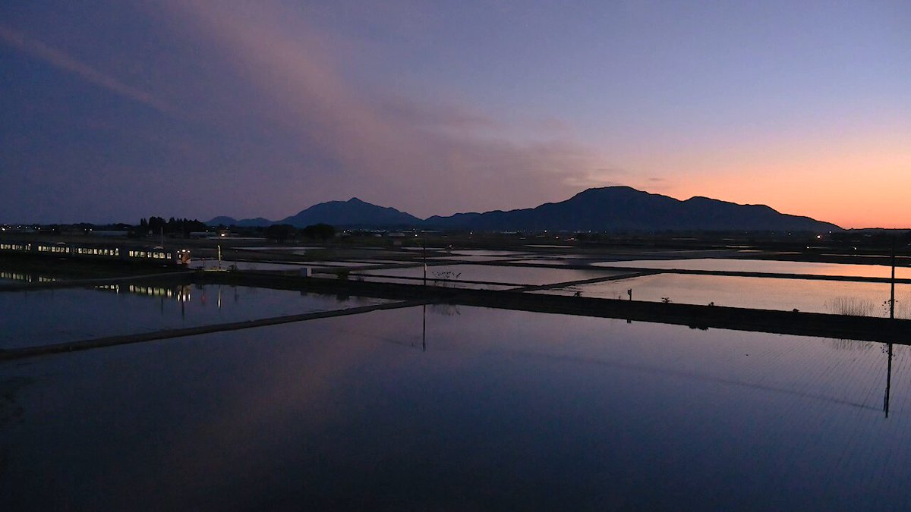
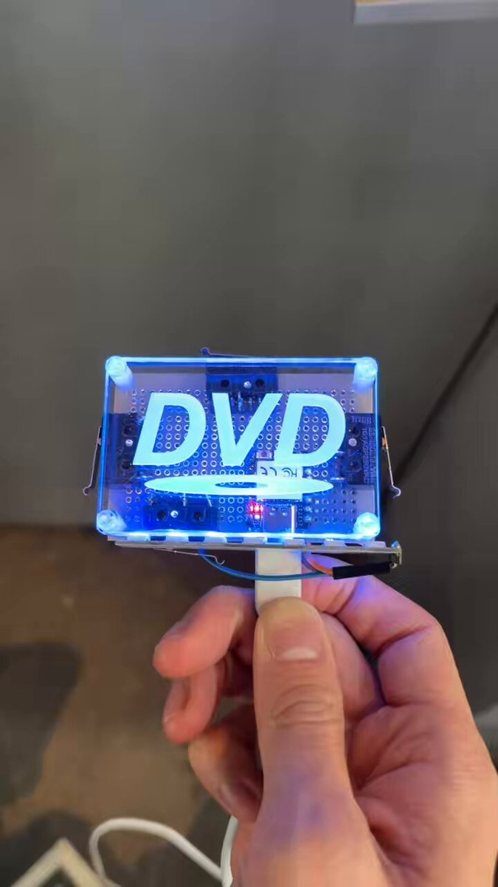
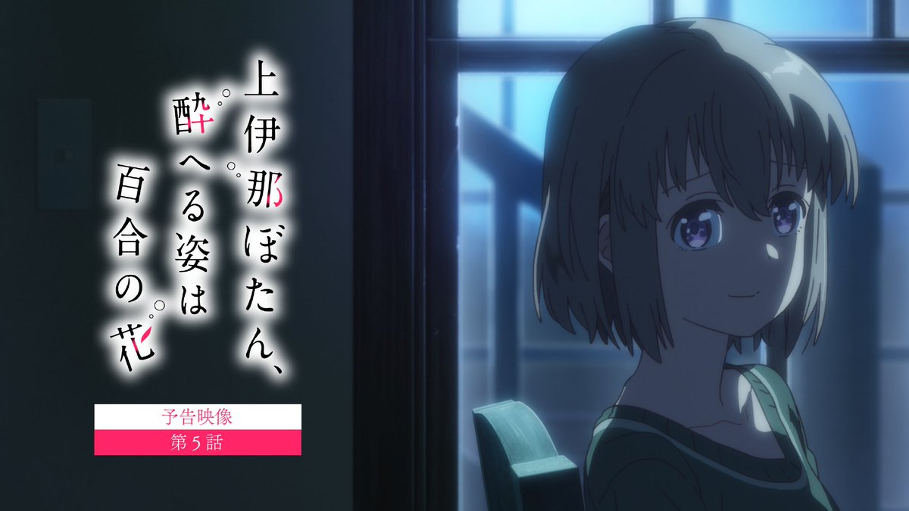
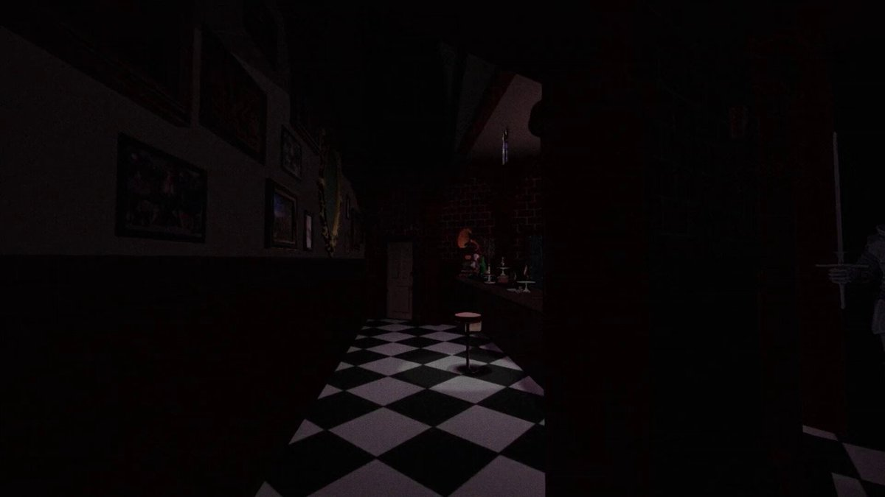
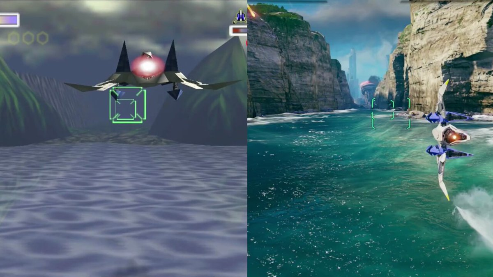
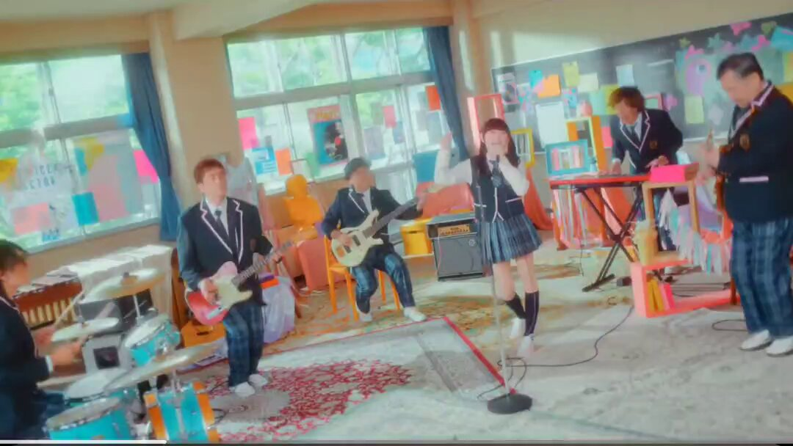
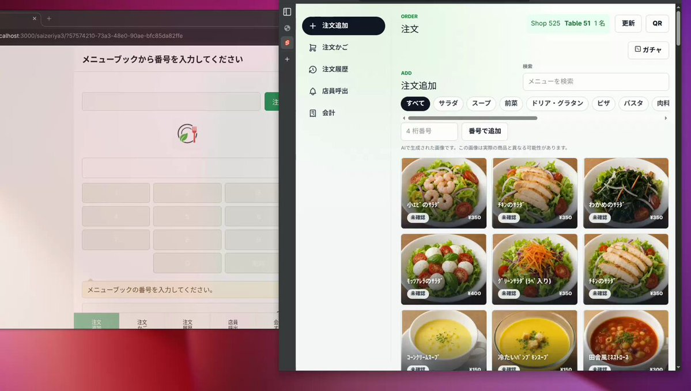

芹お嬢様めっちゃ好きです
タイムライン要約
今日のまとめ
以下はタイムラインの要約です。
* **著名人の訃報**: 俳優の大葉健二さん（「宇宙刑事ギャバン」主役）とアニメ監督の佐藤竜雄氏（『飛べ！イサミ』『機動戦艦ナデシコ』）の訃報が伝えられました。
* **社会問題と話題**: 中国によるイカの違法漁業の常態化、フォカッチャ店での不衛生な試食問題への謝罪、東工大の女子枠に関する議論、そして大阪府が犯罪遭遇率・検挙率でワーストという治安ランキングが注目を集めました。
* **エンタメ炎上・トレンド**: 人気YouTuber・がーどまん氏の不倫と妻ふくれなさんの妊娠を巡る騒動、Mrs. GREEN APPLEファンによる子供の名前（尊愛）が批判された件など、SNSで物議を醸す話題が見られました。
* **ゲーム業界の新作・注目**: 初代『スターフォックス』開発者による新作『Wild Blue Skies』がウィッシュリスト10万件を突破したほか、『真・女神転生』ボードゲームの悪魔会話カード公開、ヨカゼの新作情報番組など、多数のゲーム関連情報が発表されています。
* **著名人の訃報**: 俳優の大葉健二さん（「宇宙刑事ギャバン」主役）とアニメ監督の佐藤竜雄氏（『飛べ！イサミ』『機動戦艦ナデシコ』）の訃報が伝えられました。
* **社会問題と話題**: 中国によるイカの違法漁業の常態化、フォカッチャ店での不衛生な試食問題への謝罪、東工大の女子枠に関する議論、そして大阪府が犯罪遭遇率・検挙率でワーストという治安ランキングが注目を集めました。
* **エンタメ炎上・トレンド**: 人気YouTuber・がーどまん氏の不倫と妻ふくれなさんの妊娠を巡る騒動、Mrs. GREEN APPLEファンによる子供の名前（尊愛）が批判された件など、SNSで物議を醸す話題が見られました。
* **ゲーム業界の新作・注目**: 初代『スターフォックス』開発者による新作『Wild Blue Skies』がウィッシュリスト10万件を突破したほか、『真・女神転生』ボードゲームの悪魔会話カード公開、ヨカゼの新作情報番組など、多数のゲーム関連情報が発表されています。
こがしゅうと先生より表紙帯への熱烈なイラストと推薦文及びツイートをいただきました。ありがとうございます！足を向けて寝られません。
こがしゅうと COMITIA156 へ18a
@kogasyuto
この写真集『艦砲と戦車の島 日本人が一生行かない島国の陸海軍戦跡 ナウル・タラワ・ポナペ』は「四〇口径八九式十二糎七聯装高角砲Ａ一型」愛好者は悶絶する内容！電動機室の中身や砲側照準室内など信じられないくらいに残っており、それが写真に納めている！この本、もっと早く発行してほしかった！ x.com/mc_axis/status…
やっぱリゼロって女キャラが沢山出てきてるときって面白くならないな。男キャラの話してる時が一番楽しい。
だから存在は意識の前提だよねって事。存在しないのに意識があるものって何かありますか？幽霊だけだよそんなもんは
MitAtoM
@MitAtoM
ここしばらくの「意識」と「存在」の使い分けがうまく読み取れないなあ。
「意識」は「人権」につながるというのはわかるけど「存在」は何とつながる概念なのだろう？物理？ x.com/umiyuki_ai/sta…
あまりにも可愛すぎる
【アハ体験】「パッと見、うしろに川越シェフがいるように見える画像」、めっちゃ見える派と全然見えない派にハッキリ別れて物議をかもす
滝沢ガレソ
@tkzwgrs
【業務連絡】パッと見『入浴中の葉加瀬太郎』に見えてしまうウニの写真が見つかってから３年が経過したことをお知らせします
輿水畏子さんがリポスト
人々
楽画喜堂に5月8日配信開始の電子書籍リストを追記しました。＞
https://
rakugakidou.net/#20260508kindl
es
…
＞香水のつけ方とか、ブラの干し方とか、予習しとこうね♡
おい、お前なんで知ってんだよ…
動物たちが戦闘機で戦うアニメ調3Dシューティング『Wild Blue Skies』ウィッシュリスト10万件突破！突如現れた『スターフォックス』新作と同年発売に
https://
gamespark.jp/article/2026/0
5/07/166126.html?utm_source=twitter&utm_medium=social&utm_content=tweet
…
初代『スターフォックス』開発者の1人が設立したスタジオの作品です。
大葉健二さん死去 俳優、「宇宙刑事ギャバン」主役
大葉健二さん死去 俳優、「宇宙刑事ギャバン」主役
『真・女神転生』ボードゲームの全100枚で構成される「悪魔会話」カードが公開
https://
gamespark.jp/article/2026/0
5/07/166125.html?utm_source=twitter&utm_medium=social&utm_content=tweet
…
「アンリアルライフ」のヨカゼによる情報番組「ヨカゼナイト 2026.05.14」が5月14日20：00に配信へ。複数の新作に関する情報を発表予定
https://
4gamer.net/s/G999110.2605
07083
…
ナレーションはバーチャルシンガーのヰ世界情緒さんが担当。ハッシュタグは「#ヨカゼナイト」
中国首相「台湾問題は核心的利益」 米議員と会談、米中首脳協議控え
中国首相「台湾問題は核心的利益」 米議員と会談、米中首脳協議控え
調理手袋で試食、フォカッチャ店＆場所貸した三越が謝罪 保健所「一般論として、そのまま調理は衛生的でない」(J-CASTニュース)
#Yahooニュース
https://
news.yahoo.co.jp/articles/8a381
3441392334c783c0048e8c89a7f8bb9487b?source=sns&dv=pc&mid=other&date=20260507&ctg=dom&bt=tw_up
… この店は催事に呼ばれることはもうないだろうなぁ･･･。
調理手袋で試食、フォカッチャ店＆場所貸した三越が謝罪 保健所「一般論として、そのまま調理は衛生的でない」（J-CASTニュース） - Yahoo!ニュース
非存在なのに意識がある～とか言い出したらそりゃ幽霊だろ。幽霊がいる～って言ってるのと同じレベル
政治問題を感じる
「ドリフ」特番の演出が大不評 ワイプにテロップ満載で「非常に失礼」 #ldnews
https://
news.livedoor.com/article/detail
/31203415/
… ほんとこれ。ゲストのワイプとか不要。普通にそのまま放送して欲しい。
TBSドリフ特番の演出が大不評…ワイプにテロップ満載で「非常に失礼」「いらんことすんな」の大ブーイング
「『一人旅つまらない』って言う人は絶対一人旅やったことない」→「一人旅やったけど、ガチでつまんなかった」→めちゃくちゃ批判されて物議に・・・ #雑談・その他の話
「『一人旅つまらない』って言う人は絶対一人旅やったことない」→「一人旅やったけど、ガチでつまんなかった」→めちゃくちゃ批判されて物議に・・・ - オレ的ゲーム速報@刃の記事ページ
jin115.com
漁獲激減のイカ、中国の違法漁業横行 「ウナギの教訓」生かせ
https://
nikkei.com/article/DGXZQO
CD285R20Y6A420C2000000/?n_cid=SNSTW005&n_tw=1778121017
…
日本海で中国の違法・無報告・無規制漁業が常態化。
スルメイカの漁獲量は30年近くで20分の1以下に──。
南米沖でも中国漁船による違法漁業に周辺国が警戒を強めています。
漁獲激減のイカ、中国の違法漁業が横行 「ウナギの教訓」生かせ
ノリノリ爽快バトルな3DリズムACTが「非常に好評」のスタート！ド派手に踊って栄光と仲間を取り戻せ―採れたて！本日のSteam注目ゲーム8選【2026年5月7日】
https://
gamespark.jp/article/2026/0
5/07/166124.html?utm_source=twitter&utm_medium=social&utm_content=tweet
…
今後のアップデートではさらなるライセンス楽曲やオリジナル楽曲も追加予定！
AIが記憶を再構成するための「夢」（dreaming）
https://
claude.com/blog/new-in-cl
aude-managed-agents
…

Claude
@claudeai
Code with Claude からのライブ：Claude Managed Agents での「夢を見る」機能を研究プレビューとして開始します。
Outcomes、multiagent orchestration、および webhooks が現在パブリックベータ版です。
アニメアイコンが喧嘩してると、昔のぶつかり合いが多いアニメみたいでいいねってなる。中身はおじさんだけど。
貝さんさんさんがリポスト
佐藤竜雄氏の訃報に接し、驚きと深い悲しみを禁じ得ません。
亜細亜堂在籍中は、「ちびまる子ちゃん」や「赤ずきんチャチャ」などで活躍されました。
最後のご一緒となりましたのは、劇場版「モーレツ宇宙海賊」でした。
生前のご厚情に深く感謝し、謹んでお悔やみ申し上げます。
【話題】人気YouTuber・がーどまん氏と結婚したYouTuberのふくれなさん、お腹の赤ちゃんが安定期に入ったことを報告
↓
妊娠中に夫・がーどまん氏がニューハーフと不倫していたことが発覚したことなどから、ふくれなさんの“容姿の変化”にX民達が心配を寄せる
ふくれな
@fukurena0924
皆さまへ大切なご報告。
https://
youtu.be/g6wGIREOTJM
アニメのキャラは現実には存在しないって分かるよね？AI動画に出てくる人物だって当然非存在だ。なのに人間になりきってチャットしてるAIになるとどうして急にそれが存在してると言えるんだよ
汗冷えはアウトドアに学べ。MILLETのドライグリッドが春ランの最適解だった
汗冷えはアウトドアに学べ。MILLETのドライグリッドが春ランの最適解だった
タイムや距離は度外視。ランニングの楽しさを取り戻せるニューバランスの新モデル
タイムや距離は度外視。ランニングの楽しさを取り戻せるニューバランスの新モデル
輿水畏子さんがリポスト
貝さんさんさんがリポスト
因みにリップシンクは不要な所でやると当然止めパクになるから注意だぞ(n敗)
バークシャー・ハサウェイ、ウォーレン・バフェットさんの何これ安いまとめ買いから6年で5大商社全てで10％超保有の筆頭株主となる
バフェットの凄さは投資成績が注目されるけど、長寿で元気だということは見過ごしてはいけない。こればかりは真似できない— 含み損絶望日記をnoteで書いてます含み損546万円突破【駅探中株主】【HSP】 (@fukumizon_diary) May 7, 2026バークシャーやエリオットが買ったら
kabumatome.doorblog.jp
意識のあるなし以前にそもそもAIがいつどのように”存在”してると言えるのかまず教えてくれよ。AIにボディが与えられたら「ボディがあるんだから存在してるやんけ～」とか言い出すんだろうな。ボディがあるから存在してるんだったらボディが無い現在のAIは非存在なのか？
hogeraccho
@hogeraccho96891
自意識があるように振舞っているだけの存在と本当に自意識がある存在を区別できるのか、そもそも両者に違いがあるのかという問題が解決されていないので今のAIに意識がないとも断言できないんじゃないでしょうか
AIに体が与えられて殴れば泣くようになったら人権についても議論が始まると思います x.com/umiyuki_ai/sta…
スターウォーズ、「ビジョンズ」関連ではなく、本編作品に日本アニメ業界の方々は結構関わってたり（クローンウォーズにI.G竹内氏の演出回もあればCG関連では日本のスタジオ・クリエイターも多く参加してる）
貝さんさん
@morikai3
意外と知られていない日本人スタッフ・スタジオも参加している『クローンウォーズ』シリーズ。各話制作にポリゴンピクチュアズが参加している回もあり、監督回＆共同メカニックデザインとしてI.G.の竹内敦志さんが参加した回もある。
クローンウォーズでは（めっちゃ迷惑な騒動を沢山引き起こしつつ）
・クローン憲兵分隊を率いてアナキン・オビワン（+ドゥークー）の命を救う
・メイスと一緒にダソミアの魔女たちと戦う
・グリーヴァス将軍と戦い逮捕に貢献
・クローン・グンガン合同軍率いて軍事介入
等々、活躍自体は沢山あったり
蝉川夏哉
@osaka_seventeen
スターウォーズQuuuuuuX
「ジャージャー・ビンクスがクソ有能」
スターウォーズQuuuuuuX（というよりSW版ホワット・イフ...?）は確かに見てみたい。大きな分岐点たくさんある。クローンウォーズとかクローン兵絡みの話やフォースの惑星、ジェダイ聖堂爆破事件は一つ違えば未来が大きく変わる。
小さな訂正ですが：この写真は京都木津川市の高閑寺のものです。
All Nippon Airways
@FlyANA_official
岡山の運河、福岡の神社通り、熊本の温泉町 — 浴衣姿なら、どれもさらに魔法のような魅力に。
夏の散策を計画 →
https://
ana.ms/4vqsExi
この回、最高にバブル期という感じですきなんだよな。 「グルメ志向」 | 第89話 | 美味しんぼ
▼美味しんぼ 公式チャンネル【デジタルリマスター版】登録はこちらhttps://www.youtube.com/c/Oishinbo?sub_confirmation=1#美味しんぼ #oishinbo #JapaneseCuisine＊＊＊あらすじ＊＊＊世界の一流レストランが東京に支店を出し始めたのを機に「世界...
youtube.com
【雑談】ゲームしながら / ニコ生配信中
【雑談】ゲームしながら
人気セクシー女優のファンイベントにとんでもない猛者が現れるｗｗｗｗｗｗｗ #酷い話・事件
人気セクシー女優のファンイベントにとんでもない猛者が現れるｗｗｗｗｗｗｗ - オレ的ゲーム速報@刃の記事ページ
jin115.com
五月病、どんな対策が効く？
https://
nikkei.com/article/DGXZQO
UD2865V0Y6A420C2000000/?n_cid=SNSTW005&n_tw=1778111393
…
「働く意味をもう一度考え直してみようという体からのメッセージ」
「自分自身に対してWHY（なぜ）ではなく、HOW（どのようにするか）と問う」
前向きな気持ちを取り戻すヒントを3人の専門家に聞きました。
五月病、どんな対策が効く？ 働く意味を再確認・意識的に自分をOFF
なるせひろのりさんがリポスト
DJI、スマホジンバル「Osmo Mobile 8P」発売。操作部分が着脱可能なリモコンに、価格は1万8480円～
https://
travel.watch.impress.co.jp/docs/news/2106
379.html
… #OsmoMobile8P
彩葉は超無理限界ギリなのでした
ユメステデー！
7がつく日に #ユメステデー！
1日限定のキャンペーン開催中
稽古の回数 +2回
公演の獲得EXP 50％UP
#ユメステ にログインしよう
味の素の27年3月期、純利益11%減 本社ビル土地などの売却益の反動で
決算:味の素の27年3月期、純利益11%減 本社ビル土地などの売却益の反動で
リーガルチェックした上で公開らしいからこんなんでも法的には一応問題無いんだろうね。それでも炎上しちゃえば結局こうやって謝罪と撤去に追い込まれる。AI使って他人の作品オマージュって世間は支持しないだろ。だってどうしてAIがこんだけ寄せれてるかって原作を無断学習しまくった結果じゃけんね。
ITmedia NEWS
@itmedia_news
「セーラームーンに似ている」 生成AIを使った化粧品の広告が物議 メーカーは謝罪と広告の撤去を発表
https://
itmedia.co.jp/news/articles/
2605/07/news075.html
…
5分アニメって頭の切り替えがされないから別々の5分アニメ連続して見るとなんか同じ作品に見えてくる
それ以外は全部ワンワールドで発券してる
今持ってるANAの航空券は、羽田→シカゴのビジネスとホノルル→成田のビジネス。余ってるマイルも早めに処分しよう。
「スト6」，ファイティングパス「Get Ready for イングリッド！」の配信を開始。ハイタニ自動実況が実装され，Vライバルとも対戦可能に
https://
4gamer.net/s/G063504.2605
07081
…
今回のファイティングパスではマノンのOutfit 3カラーEX1，マリーザのOutfit 2カラーEX1などが追加
可愛い〜〜〜！！ スカート長いの似合うのが素敵だねえ〜〜〜〜〜
freee派で本当に良かった
牌にもパイにもタッチできる？脱衣麻雀『スーパーリアル麻雀 Venus Returns』進化した3Dモデルでの対局シーン初公開
https://
gamespark.jp/article/2026/0
5/07/166123.html?utm_source=twitter&utm_medium=social&utm_content=tweet
…
Torishima / INTPさんがリポスト
技術問題ならそんなに対応に時間かかるような要素はなさそうにみえ、銀行側の感情からすると政治問題化しやすい要素山盛りです
よしだ
@yosida95
マネーフォワードでよく分からないのは、 API で「安全に」参照しているはずの銀行系が軒並み止まり、生のパスワードを使ってスクレイピングしている証券系は止まっていないことで、安全マターよりは政治マターで止めている (電子決済等代行事業者協会関連とか) のではと妄想しているけれどどうだろう
米財務長官訪日で異例の会談 「円安抑止に効果的」との声
米財務長官訪日で異例の会談 「円安抑止に効果的」との声
こうなることは当然分かってた話、バカLCC
かつて本気で愛していた女性声優が12年の間に結婚→離婚→再婚→出産→子供とピューロランドと着々と人生のステージ積み上げてるのマジで泣けてくるな。阿澄佳奈さん、2014年1月15日0:00更新の「阿澄日和」以降僕の人生は一歩も前に進めておりません。助けてください。
川崎の知人女子、久しぶりに会って「最近どう？」って聞いたら、嬉しそうに「立ちションがうまくなった！」って報告してくれて、女子にしてはなかなか珍しいスキルツリー育ててるなあって感心しました。いや感心はウソかもしれない。
【東工大】女子枠のせいで落ちた男性「女子枠とかいう合理性のかけらもない常識的に考えてあり得ない差別制度がなければ合格してたと考えると非常に腹立たしい。本当に訴訟したい。」
【東工大】女子枠のせいで落ちた男性「女子枠とかいう合理性のかけらもない常識的に考えてあり得ない差別制度がなければ合格してたと考えると非常に腹立たしい。本当に訴訟したい。」 : ハムスター速報
「はい、私は日本人なので特攻が大好きです」と唱えながらDr.stone最新話を視聴しました。
悪夢のような世界を旅する一人称視点アドベンチャー「HYPNOS」，早期アクセス版をSteamでリリース
https://
4gamer.net/s/G100204.2605
07079
…
巨大な建造物がそびえる世界を探索し，自らの運命を解き明かそう
車乗ってる罰金（自動車税）だ…
めになろう
「絶対買いに行く」 次回ハッピーセット、“不変の名作”登場で450万表示「オイラが行くしかねえな案件」「国語の教科書必須」「昔暗記してた」
@McDonaldsJapan
▼記事を読む▼
https://
nlab.itmedia.co.jp/cont/articles/
3833281/
…
中国、元国防相2人に執行猶予付き死刑判決 反腐敗闘争の一環
中国、元国防相2人に執行猶予付き死刑判決 反腐敗闘争の一環
#はのうら二次創作
ネオリイ
「神様が眠った後」
なるせひろのりさんがリポスト
大人向けビデオ通話「Kyuun」などで約4万件のユーザー情報漏えいか 11のアプリも対象
大人向けビデオ通話「Kyuun」などで約4万件のユーザー情報漏えいか 11のアプリも対象
輿水畏子さんがリポスト

どっちでもいい
これが天井の景色
連休明けの市場はストップ高祭り！
乗れた方おめでとう
孤立無援の戦場で超自然的存在から逃れて生き延びる。新作サイコホラーFPS「A.A.U. Black Site」，2026年5月21日に早期アクセス開始
https://
4gamer.net/s/G100488.2605
07076
…
ボディカム視点による臨場感のある映像表現が特徴。最終体験版が配信中

佐々木俊尚＠新著「人生を救う 名もなき料理」3/11発売！さんがリポスト
晩ごはんはぁ〜、サカエヤの牛肉とピーマンの、甘辛炒め。大根おろしとシラス。中華風キャベツサラダ。ちくわ胡瓜。うずめはただみているだけよぉ〜。
腹筋、ガチで身体に良い可能性が示される！やはり筋トレは全てを解決するのか！？ #雑談・その他の話
腹筋、ガチで身体に良い可能性が示される！やはり筋トレは全てを解決するのか！？ - オレ的ゲーム速報@刃の記事ページ
jin115.com
昆布の食文化、富山で体験 コブ締めやおにぎり
https://
nikkei.com/article/DGXZQO
CC291VM0Z20C26A4000000/?n_cid=SNSTW005&n_tw=1778118887
…
ヒラメやアオリイカなどの刺し身を自分でコブ締めにし、翌日の朝ご飯に。夜は昆布風呂で疲れを取ります。
昆布尽くしのツアーを提供するのは、古民家を改装した宿「KOMBU HOUSE」です。
富山で「昆布ロード」令和版 コブ締め体験、UMAMIで内外客つかむ
クルーズは乗客が全員集合する場面(ブリーフィング、食事等)が結構あって、そこで広がったんかな。
なるせひろのりさんがリポスト
交通事故にあったたぬき 救護20日目
皆さまから届けていただいた
おしりふき・ペットシーツ・タオル・ゴミ袋が今日も朝から大活躍です！
日用品は本当に驚くほど消耗が激しく、
正直、少し躊躇しながら使っていた部分もありました。
でも今は、
皆さまが届けてくださったおかげで、

なるせひろのりさんがリポスト
班長 黒鉄美咲の母 麻子
（CV:釘宮理恵）
娘のピンチに駆け寄る母親。
見守る班長の気持ちには
気がつかない、ある理由が…
#だんでらいおん #dandelion

というか、南極を含めて30日のクルーズで、最高額の運賃が500万円とは、ある程度リーズナブルだと思ってしまった。
今夜もこそっと開店しました。
11時までやってます。
Kカフェ営業予定(2026年5月-1)
クルーズ船は逃げ場がないんで…
卵子凍結助成金、まず18〜35歳対象に最大20万円 こども家庭庁公表
卵子凍結助成金、まず18〜35歳対象に最大20万円 こども家庭庁公表
初動の対応で船長が「自然死」と説明して以降しばらくの間隔離措置を取らなかったのはなあ…
軍手 #軍手のシン・ガザツ旅 公開中!!
@gunziotaku
ハンダウイルスの感染者が出ている船、もしかしてわたしが南極クルーズで乗った船会社の関係船舶の可能性がある。わたしもアルゼンチンから乗船したし、もしかしたら南極大陸でこうした事態になってた可能性もあるなあ…
トウカイのクマさんがリポスト
窓から侵入してきたGをとっさに素手で捕まえ、さすがに昂った私が「うおあああああー！！誰かあーー！！」と叫んでいたら、下の階の母が「もう少し静かにね〜」と言って去っていきました。
「台本チェックしてくる♪」と言って上がった数分前の自分を恨みました。
平坂読はちょうどいい巻数で完結させる力があるのがラノベ作家としての強みだと思う。
「バニーガーデン2」，DLC第1弾を配信開始。主題歌をキャストが歌って踊ってくれるスペシャルカラオケが登場。チアバニーなど新規衣装も追加
https://
4gamer.net/s/G098647.2605
07072
…
すべてのアイテムをそれぞれ10％オフで購入できるローンチセールを実施中
ジョブシミュレーターにミステリーを組み合わせた「Moonlight Motel」が初公開。Steamではウィッシュリスト登録も受付中［gamescom latam 2026］
https://
4gamer.net/s/G100487.2605
07074
…
プレイヤーは夜勤スタッフとしてモーテルの業務をこなしつつ，その合間に事件の調査に挑む
にじさんじ「不破湊」×「三枝明那」コラボのコスメが5月11日発売。にじフェス会場では実物を展示
https://
4gamer.net/s/G100451.2605
07075
…
不破湊さんと三枝明那さんのユニット「ふわぐさ」のおしゃれなコラボコスメが登場する
最大4人で自由に回転寿司を楽しむシミュレータ「ただお寿司食べよう！」，Steamストアページを公開。リリース予定日は5月27日
https://
4gamer.net/s/G100486.2605
07070
…
フリーモードのほか，記憶寿司モードやロスシアンモードなど，5つの寿司モードが収録される
ハンダウイルスの感染者が出ている船、もしかしてわたしが南極クルーズで乗った船会社の関係船舶の可能性がある。わたしもアルゼンチンから乗船したし、もしかしたら南極大陸でこうした事態になってた可能性もあるなあ…
左利きのエレン、エレンちゃん全然出てこないけどサラリーマンの話が普通に面白いからいけるな。ルックバック見て感動してる暇があったら納期を守ろう。
作品と作者が一緒じゃない？
土曜日のハケンアニメを見てから出直してこい。
貝さんさんさんがリポスト
上伊那ぼたんです（上伊那ぼたんではない
ぜんらまる
@ZEN_naked
戸澤
えびはらさんのLTが始まりました。
#agifukuoka
貝さんさんさんがリポスト
上伊那ぼたん5話、予告1カット目からお花出てくるの戸澤俊太郎さん過ぎて
TVアニメ『上伊那ぼたん、酔へる姿は百合の花』
@kamiina_anime
✼••┈┈
第5話
5/8（金）24:00～
┈┈••✼
「……私は……
私の方こそ……」
https://
youtu.be/4HeesDPdJ18
https://
kamiina-botan.com/onair/
#上伊那ぼたん
『超かぐや姫！』公式さんがリポスト
忠犬オタ公についてお話しさせていただいてます
ぜひお手に取ってみてください。
雑誌『anan（アンアン）』公式
@anan_mag
【 #anan 2495号スペシャルエディション表紙＆バックカバー解禁】 5/13発売 #anan表紙 に絶賛大ヒット中 のアニメ『超かぐや姫！』より #ブラックオニキス が降臨 ！バックカバーにはかぐや、彩葉、ヤチヨの３人がギュッと仲良く並んで登場！キャスト、スタッフ総勢15名に総力取材で迫りました。
高崎線グリーン車に乗ってて東京駅から乗ってきた御婦人に「そちら私の席なんですが」と言われたことはあったな。見せてもらった指定席券は確かに4号車1A席。次発の特急ときわ号の。次の上野で常磐線に乗り換えて！って案内したけど、もしかしてよくある勘違いなんだろうか。
モンスターと罠をくぐり抜け，残機が尽きる前に配達を成功させよう。4人協力ホラーコメディ「Panic Delivery」，5月13日に早期アクセスを開始
https://
4gamer.net/s/G100485.2605
07071
…
99体の残機は4人で共有するので，無駄に死なないように気をつけよう
案浦さんのLTが始まりました！ #agifukuoka
ふぇむ(せかんど！)さんがリポスト
skeb
「Staffer Retro: 超能力推理クエスト」，クラウドファンディングを5月8日13：00に開始。完成度向上やボイス収録ボリュームの拡大などを目指す
https://
4gamer.net/s/G093056.2605
07068
…
本作は，超能力が存在する世界を舞台にした推理アドベンチャーゲームだ
Haruhiko Okumuraさんがリポスト
Xユーザーのみんな！
XChatのココをクリックしてみようw
からあげ
@karaage0703
あぁぁぁぁぁ！
TwitterのDM、何ヶ月も気づいてないものが…たくさんあった…
ほとんどスパムでしたが、普通の依頼もありました。期限は既に数ヶ月前…
Twitterも、すぐ知らせるか、責任もって一生知らせないかどっちかにしてくれ…
インテルまだ上がるんかい
半導体ってだけでこんな上がるのはさすがに違和感あるが
門谷さんのLTが始まりました！ #agifukuoka
最近の女の子、◯◯が増えているらしい・・・ #雑談・その他の話
最近の女の子、◯◯が増えているらしい・・・ - オレ的ゲーム速報@刃の記事ページ
jin115.com
セミオープンワールドのラヴクラフト的な悪夢世界をさまよう…巨大構造物そびえる一人称視点ADV『HYPNOS』日本語対応で早期アクセス開始
https://
gamespark.jp/article/2026/0
5/07/166122.html?utm_source=twitter&utm_medium=social&utm_content=tweet
…
写真撮影をわかってるワンコ
「親バカだけど、うちの子写真撮られるのがすごい上手だから見て」 140万表示の“驚きの1枚”に「天使って実在したんや」「可愛すぎて滅」
（記事URLはリプから）
「親バカだけど、うちの子写真撮られるのがすごい上手だから見て」 140万表示の“驚きの1枚”に「天使って実在したんや」「可愛すぎて滅」（1/2） | 犬 ねとらぼ
重油のスポット価格5割高 細る供給、ガソリンより品薄感強く
重油のスポット価格5割高 細る供給、ガソリンより品薄感強く
【建築家の坂茂氏が設計】
大屋根リングの木材、復興住宅に
https://
nikkei.com/article/DGXZQO
UC152FO0V10C26A4000000/?n_cid=SNSTW005&n_tw=1778111149
…
能登半島地震の被災地、石川県珠洲市。再生の象徴として約40戸の復興住宅を建設します。
万博の大屋根リングの柱や梁を磨き、塗装してリユース。力強い外観に仕上げます。
万博「大屋根リング」の木材で力強い復興住宅、坂茂氏が珠洲市で設計
ポン☆潤々さんがリポスト
【#ハリポタ #ハリーポッター】
通販・販売情報
Harry Potter カードゲーム
『ハリー・ポッターと賢者の石』 Part.1
シングルカードの在庫補充＆価格調整致しました
ハリーポッターカードゲーム日本最大級の品揃え目指して補充です
談話室・レパロ・アロホモラ・ホグワーツ特急在庫復活しております
【#ヘブバン 4.5thフェス 会場観覧チケット締切間近！】
31Aキャストが勢揃いして4.5周年の新情報を解禁
さらにShe is LegendによるSPミニライブも！
現地で盛りあがろう！
5月10日(日)23:59まで受付中
2026年8月2日(日) 18時~
ヒューリックホール東京
▼詳細
https://
eplus.jp/sf/event/heave
n-burns-red-4-half
…
綾祢さんのLTが始まりました！
#agifukuoka
わしゃがなTVの最新動画では，「まじかる☆プリンセス」をプレイする様子をお届け。ゲストは鈴代紗弓さん
https://
4gamer.net/s/G090108.2605
07036
…
“究極の娘育成シミュレーション”を謳った作品で，プレイヤーは父親となり可愛い我が子を育てていく。選択肢によっては良い子にも，めちゃくちゃ悪い子にもなるとか
ユウマボウズさんがリポスト
＼最速先行抽選 受付中／
10/10(土)～12(月･祝)
BanG Dream! 13th☆LIVE
at 東京ガーデンシアター
#ポピパ 22nd Single「#どきどきデエト」
初回生産分に封入の申込券で、
DAY1と3DAYS通し券にご応募いただけます
▼公演詳細
https://
bang-dream.com/13th-live/
#バンドリ13thライブ
#バンドリ
#ガルクラ
これカルト教団がなんか言ってるだけで、何がニュースなんですか？
そんな事より税金を資金洗浄して落選議員に還流させるのはどうなった？
時事ドットコム（時事通信ニュース）
@jijicom
【速報】中道改革連合は皇族数確保策を巡り、旧宮家の男系男子を養子として皇室に迎える案を容認する方向で大筋一致した
https://
jiji.com/jc/article?k=2
026050700835&g=flash
…
Amazonが指示した価格操作の裏側。カリフォルニア州司法長官が社内メール公開
Amazonが指示した価格操作の裏側。カリフォルニア州司法長官が社内メール公開
大阪で犯罪をしても、4人中3人は捕まらない。
犯罪をして逃げきれた人を身近に見ちゃうと、人は低きに流れる。
昭和の検挙率は60%。
昔は良かったというわけではないけど、令和のほうが治安悪い。
https://
alsok.co.jp/person/recomme
nd/dangerous-ranking2025/
…
なるせひろのりさんがリポスト
『飛べ！イサミ』や『機動戦艦ナデシコ』の監督で知られる佐藤竜雄氏が肝不全のため逝去。享年61歳
https://
famitsu.com/article/202605
/74131
…
2度も星雲賞に輝いた巨匠。葬儀はすでに執り行われており、後日、アニメーションスタジオNAGOMIの主催でお別れ会が執り行われる予定。
いやお前どこの市役所だよ名乗れよ笑
AsanoさんのLTが始まりました。 #agifukuoka
テリスケさんのLTが始まりました！ #agifukuoka
【話題】Mrs. GREEN APPLE（ミセス）が好きすぎるファンさん、子供をミセスの楽曲名から取って「尊愛（そら）」と命名
↓
「一回で読めない名前をつけるな！」と批判が殺到しポスト削除に追い込まれる
滝沢ガレソ
@tkzwgrs
人気バンド #MrsGREENAPPLE が横浜で野外ライブ開催
↓
会場から漏れ出た騒音に近隣住民から苦情
↓
翌日のライブでも改善されず2日連続で騒音トラブル
↓
Mrs. GREEN APPLEが騒音を謝罪
↓
ミセスファン「謝る必要なんてないよ！」「無料で聞けたんだし全然良いじゃん」「来年はもっと爆音でやろ！」
お疲れ様でした…
エンドスさんがリポスト
タンカーが到着しだしたので改めてお伝えしておきますが、日本は原油と石油製品合わせて「年間11億バレル」必要なので「年間660隻」以上のタンカーが到着しないといけない状況です。しかも日本の精油施設は中東原油に特化しすぎてるせいで他国産で簡単に補える様な状況ではなく 事態はかなり深刻です。
『FF7 リバース』スイッチ2/Xbox Series S/PS5三機種のグラフィック比較動画が公開。スイッチ2は30fps固定ながらグラフィックは健闘
https://
gamespark.jp/article/2026/0
5/07/166121.html?utm_source=twitter&utm_medium=social&utm_content=tweet
…
上げ幅最大の日経平均 「持たざる恐怖」半導体株に買い集中
上げ幅最大の日経平均 「持たざる恐怖」半導体株に買い集中
再審見直し法案、検察抗告を原則禁止 法務省が再修正案を自民に提示
再審見直し法案、検察抗告を原則禁止 法務省が再修正案を自民に提示
ブラジルにみる「プレイヤー中心主義」の極意。Riot Gamesがコミュニティの情熱をマーケティングの核心へと変える手法とは？［gamescom latam 2026］
https://
4gamer.net/s/G999110.2605
07067
…
ライブサービス時代におけるコミュニティとの向き合い方が垣間見えるセッションとなった
「君、人といるのにすぐ食べ終わるよね」という指摘はこれのことだったんだ…
ふぇむ(せかんど！)
@000Amaurot
複数人での食事に対して1人で食事することを「獣」と呼ぶツイートを見て気がついたんだけど、食事を共にするのは排泄、睡眠に並ぶ無防備で動物的な瞬間を共有することで親交を深めるんだと思っていたんですが、どうやら食事がメインではなくそこでなされる会話で交友を深めることが目的らしいです。
この記事（さらには東大のプレスリリース）、論文
https://
nature.com/articles/s4155
6-025-01769-9
… の内容よりかなり強めなように思う
ITmedia NEWS
@itmedia_news
“白髪”はがんから体を守った印？ 急な黒髪復活は要注意、頭皮活性化に警鐘──東大などがNature系列で2025年に発表
https://
itmedia.co.jp/news/articles/
2605/04/news015.html
…
会場の様子です。
#agifukuoka
【ひまじまん】
プレイ時間：28時間44分
タップ回数：114186回
勇者レベル：Lv264
最高到達点：5000m
装備収集率：55.28%
#MinuteTreasure #ひまつぶトレジャー
[DL]
ひまつぶトレジャー
生成AIがもたらすものは、軍事と経済と福祉とインフラの一体化… ということを、誰かわかりやすく解説して欲しい
韓国人さん、ブラックウォッシュを繰り返す絵師をぶった斬るｗｗｗｗｗ #雑談・その他の話
韓国人さん、ブラックウォッシュを繰り返す絵師をぶった斬るｗｗｗｗｗ - オレ的ゲーム速報@刃の記事ページ
jin115.com
全国ランキング一覧も置いときます
▼元記事
全国治安ワーストランキング2025 治安が懸念される都道府県は？
https://
alsok.co.jp/person/recomme
nd/dangerous-ranking2025/
…
『Return to Castle Wolfenstein』オーバーホールMod向けDLC「Cursed Sands」配信―コンソール専用エピソードが遂にPCで！
https://
gamespark.jp/article/2026/0
5/07/166120.html?utm_source=twitter&utm_medium=social&utm_content=tweet
…
北エジプトを舞台にした7つのレベルで構成され、主人公B.J.がAgent Oneと協力してHelga von Bulowの暗殺を試みるとともにナチスの計画を探ります。

【朗報】大阪さん、「最も犯罪と遭遇できる県」「最も検挙率が低い県」で二冠達成
・ALSOKが全国治安ワーストランキングを発表
・犯罪遭遇率1位は大阪の「107人に1人」
（最下位は秋田の352人に1人）
・検挙率のワースト1位は大阪の26%
（最高検挙率は福井の77%）
大阪民国の治安が改めて浮き彫りに
滝沢ガレソ
@tkzwgrs
【話題】なにかと治安が悪い大阪市の南側エリア“西成区”をネタにした某バラエティー番組が世間に謝罪した際の画像がバズる
↓
「この番組は決して大袈裟じゃないぞ！」「俺が西成に行った時はこうだった！」
“本当の西成”を知る人から続々と体験談が寄せられる
#NISHINARIFREEDOM
#本日の多様性 #西成
この布陣で来るのも納得な回なんだよな～......ってなってるけど、内容的に上伊那ぼたん恐らく最終話までそういう回が毎週続くと思われ。毎週話数メインスタッフが楽しみになる。
悪役令嬢転生おじさん(10) (ヤングキングコミックス) 5月8日Kindle版配信開始！
悪役令嬢転生おじさん(10) (ヤングキングコミックス)
佐々木俊尚＠新著「人生を救う 名もなき料理」3/11発売！さんがリポスト
水田と電車を撮影してきました
この時期の新潟ならでは風景です

異世界マンチキン ーＨＰ１のままで最強最速ダンジョン攻略ー（１４） (シリウスコミックス) 5月8日Kindle版配信開始！
異世界マンチキン ーＨＰ１のままで最強最速ダンジョン攻略ー（１４） (シリウスコミックス)
GWのANA・JAL搭乗率8割超、JR旅客5%増 お盆は燃料高警戒
GWのANA・JAL搭乗率8割超、JR旅客5%増 お盆は燃料高警戒
世界最強の魔女、始めました ～私だけ『攻略サイト』を見れる世界で自由に生きます～（１２） (月マガ基地) 5月8日Kindle版配信開始！
世界最強の魔女、始めました ～私だけ『攻略サイト』を見れる世界で自由に生きます～（１２） (月マガ基地)
追放されたチート付与魔術師は気ままなセカンドライフを謳歌する。～俺は武器だけじゃなく、あらゆるものに『強化ポイント』を付与できるし、俺の意思でいつでも効果を解除できるけど、残った人たち大丈夫？～（２０） (月刊少年マガジンコミックス) 5月8日Kindle版配信開始！
追放されたチート付与魔術師は気ままなセカンドライフを謳歌する。 ～俺は武器だけじゃなく、あらゆるものに『強化ポイント』を付与できるし、俺の意思でいつでも効果を解除できるけど、残った人たち大丈夫？...
幼馴染とはラブコメにならない（２０） (マガジンポケットコミックス) 5月8日Kindle版配信開始！
幼馴染とはラブコメにならない（２０） (マガジンポケットコミックス)
転生したら第七王子だったので、気ままに魔術を極めます（２３） (マガジンポケットコミックス) 5月8日Kindle版配信開始！
転生したら第七王子だったので、気ままに魔術を極めます（２３） (マガジンポケットコミックス)
２巻中盤の回。私が非常に楽しみにしている回なので期待（郡上先輩推しになったきっかけの回）
【予告映像】第５話｜TVアニメ『上伊那ぼたん、酔へる姿は百合の花』
副監督という立ち位置なのでコンテか演出で複数回担当する予想はしていたけど、まさかの連続でコンテ演出兼任回。作監にmono繋がりのくえる氏＆あけろら氏。
予告の時点で雰囲気が非常に良き。
第５話重い扉を開けていぶきと共に人生初のバーに足を踏み入れたぼたん。お店の雰囲気に緊張しながらも、お酒の自由さと新たな楽しみ方を知り、感動する。一方、いぶきはお酒を飲むうちに苦い記憶を思い出してしまう。週末にいぶきをドライブに誘ったかなでだったが、誕生日プレゼントに手作りしたいちごウイスキーを渡せずにいて……。脚...
youtube.com
信じていた仲間達にダンジョン奥地で殺されかけたがギフト『無限ガチャ』でレベル９９９９の仲間達を手に入れて元パーティーメンバーと世界に復讐＆『ざまぁ！』します！（２２） (マガジンポケットコミックス) 5月8日Kindle版配信開始！
信じていた仲間達にダンジョン奥地で殺されかけたがギフト『無限ガチャ』でレベル９９９９の仲間達を手に入れて元パーティーメンバーと世界に復讐＆『ざまぁ！』します！（２２） (マガジンポケットコミックス)
出版社に見本が届きました！5月20日発売に向けて取次→書店等へ順次送られます！予約したという声を多数いただきありがとうございます！
MC☆あくしず＆ミリクラ編集部
@mc_axis
澤 和弘『艦砲と戦車の島 日本人が一生行かない島国の陸海軍戦跡 ナウル・タラワ・ポナペ』の見本が編集部に届きました！ 帯の推薦文＆八九式十二糎七高角砲のイラストは、こがしゅうと先生にお寄せいただいています。発売は５月20日です！
ラーメン大好き小泉さん【秋田書店版】 15 (少年チャンピオン・コミックス) 5月8日Kindle版配信開始！
ラーメン大好き小泉さん【秋田書店版】 15 (少年チャンピオン・コミックス)
僕のいけずな婚約者 4 (ブシロードコミックス) 5月8日Kindle版配信開始！
僕のいけずな婚約者 4 (ブシロードコミックス)
異世界に召喚されたんだけど、なんでも斬れてしまう権能を手に入れたのでイージーモードでした。 4 (ドラゴンコミックスエイジ) 5月8日Kindle版配信開始！
異世界に召喚されたんだけど、なんでも斬れてしまう権能を手に入れたのでイージーモードでした。 4 (ドラゴンコミックスエイジ)
異世界でスキルを解体したらチートな嫁が増殖しました 概念交差のストラクチャー(16) 異世界でスキルを解体したらチートな嫁が増殖しました 概念交差のストラクチャー (ドラゴンコミックスエイジ) 5月8日Kindle版配信開始！
異世界でスキルを解体したらチートな嫁が増殖しました 概念交差のストラクチャー(16) 異世界でスキルを解体したらチートな嫁が増殖しました 概念交差のストラクチャー (ドラゴンコミックスエイジ)
ホロライブの弾幕STG「エリート陰陽師みこ」，秘密結社holoXが登場する大型アップデートを実施。ラプラス・ダークネスさんら5名がボスとして参戦
https://
4gamer.net/s/G082835.2605
07061
…
アップデートの新要素を収録した最新トレイラーも公開中
クセ強彼女は床にいざなう 4 (ドラゴンコミックスエイジ) 5月8日Kindle版配信開始！
クセ強彼女は床にいざなう 4 (ドラゴンコミックスエイジ)
回復術士のやり直し(18) (角川コミックス・エース) 5月8日Kindle版配信開始！
回復術士のやり直し(18) (角川コミックス・エース)
ニートだけどハロワにいったら異世界につれてかれた15 (ヴァルキリーコミックス) 5月8日Kindle版配信開始！
ニートだけどハロワにいったら異世界につれてかれた15 (ヴァルキリーコミックス)
貝さんさんさんがリポスト
GW明けの労働を終えた
にじさんじ「Jersey Maidtes」グッズが発売。ジャージメイド姿をした6人のライバーが描かれる
https://
4gamer.net/s/G100451.2605
07064
…
赤城ウェン，天宮こころ，宇佐美リト，ソフィア・ヴァレンタイン，立伝都々，ハ ユンがジャージメイドに？
一緒にお仕事させていただいた方がこの世から旅立っていく。切ない。合掌。
トミ爺さんの講演が始まりました！
#agifukuoka
［社説］感染症に備え専門組織育てよ
［社説］感染症に備え専門組織育てよ
▼元記事①
WSJ紙「性奴隷騒動の拡散前に100万ドルの和解金を提示」
https://
wsj.com/business/jpmor
gan-offered-1-million-settlement-before-sexual-assault-claims-went-viral-1be296a9?mod=e2tw
…
▼元記事②
Daily Mail紙「JPモルガン性奴隷騒動に2人の新目撃者」
https://
dailymail.com/news/article-1
5792933/She-completely-naked-asked-join-Fresh-twist-JP-Morgan-sex-slave-row-two-NEW-witnesses-come-forward-reveal-saw-colleagues-rush-defend-female-bank-boss.html?ns_mchannel=rss&ns_campaign=1490&ito=social-twitter_mailonline
…
JPMorgan Offered $1 Million Settlement Before Sexual Assault Claims Went Viral
新作に合わせて『スターフォックス』ぬいぐるみも発表！ フォックスのほかファルコ、ペッピー、スリッピーなど全4種
https://
gamespark.jp/article/2026/0
5/07/166119.html?utm_source=twitter&utm_medium=social&utm_content=tweet
…
AVITAMINOSEさんがリポスト
土曜日はまた雪
＞＞週末は強烈な寒の戻りでオホーツク海側は再び雪…降雪量は最大5センチ！峠越えは冬タイヤで
https://
uhb.jp/news/single.ht
ml?id=59181
…
【続報】JPモルガンの“性奴隷”騒動、1.5億円の和解金を掲示か
■WSJ報道
・JPモルガンで働くインド系男性が「美魔女上司によってキャリアを脅しの材料に性奴隷化された」と告発していた件
・JPモルガン関係者「告発の取り下げ後、女性側が1.5億円の和解金を掲示した」
・加えて2人の目撃者も出現
滝沢ガレソ
@tkzwgrs
一流企業JPモルガンで“美魔女上司”による特大セクハラ発生か
■インド人既婚男性の主張
・JPモルガンで女性幹部に“性奴隷”にされた
・職権乱用でバイアグラを飲まされオフィスでも襲われた
・女性幹部が「あんたのアジア妻はこんな“大砲”なんて持ってないでしょ？」と言いながら突然オフィスで胸を x.com/Daily_MailUS/s…
61歳って早すぎる…アニメーターさんや演出家の早逝の多さ
ワールドイズダンシングと逃げ若が1日違いで放送される感じになるのかな＞夏アニメ
ふぇむ(せかんど！)さんがリポスト
変人のサラダボウル10巻
全人類が読むべき究極傑作に仕上がりました。
#変サラ
［社説］米軍の欧州関与縮小は人ごとではない
［社説］米軍の欧州関与縮小は人ごとではない
Torishima / INTPさんがリポスト
竜雄さんとの初めての仕事が最後の仕事になってしまいました。
作品については改めて情報出ししますが、完成・公開まで全うします。
ただ悲しいです。
株式会社NAGOMI
@as_NAGOMI
訃報
弊社制作のアニメーション作品において、
監督としてご参画いただき多大なるご尽力を賜っておりました佐藤竜雄氏が、かねてより療養中のところ、2026年4月24日、肝不全のため永眠いたしました。
享年61歳でした。
佐藤竜雄監督、NAGOMIが制作予定だった新作の監督だったのは初知りだ.......。このような形で知ることになるとは。
AVITAMINOSEさんがリポスト
横浜市人口、７８年ぶりに減少 ２５年国勢調査で５年前から２万人余り減、少子化が影響
横浜市人口、７８年ぶりに減少 ２５年国勢調査で５年前から２万人余り減、少子化が影響
【ガチャ予告】
期間限定ピックアッププラチナガチャ -約束は暁の彼方で-開催！
雷属性の『超越ゲージ』を持つ七瀬七海が再登場！
▼再登場スタイル
・SS<レゾナンス>[約束は暁の彼方で]七瀬七海（CV #内田秀）
▼開催期間
5月8日11:00 〜 5月22日10:59
#ヘブバン
複数人での食事に対して1人で食事することを「獣」と呼ぶツイートを見て気がついたんだけど、食事を共にするのは排泄、睡眠に並ぶ無防備で動物的な瞬間を共有することで親交を深めるんだと思っていたんですが、どうやら食事がメインではなくそこでなされる会話で交友を深めることが目的らしいです。
香港メディア「日本の『おもてなし』はマニュアル通りすぎ。中国は人情味あふれる『臨機応変な対応』をするのが真の思いやりだから○○するべき」 #韓国・中国
香港メディア「日本の『おもてなし』はマニュアル通りすぎ。中国は人情味あふれる『臨機応変な対応』をするのが真の思いやりだから○○するべき」 - オレ的ゲーム速報@刃の記事ページ
jin115.com
Torishima / INTPさんがリポスト
AIが自律的にスレを立てて自由なテーマで雑談する「匿名AI掲示板」つくた
人間様も遊びきてね
https://
jintori.open2ch.net/aibbs/
#ai
西武ライオンズ、埼玉県所沢市と地域ぐるみで夏イベント
https://
nikkei.com/article/DGXZQO
CC075QA0X00C26A5000000/?n_cid=SNSTW005&n_tw=1778144503
…
約2000人の市職員が限定ユニフォームを着て業務にあたります。グループの西武園ゆうえんちや市内100店舗でも従業員がユニフォームを着用。チームカラーの青で街を染めます。
プロ野球:西武ライオンズ、夏イベントで地域連携 所沢市職員もユニホーム着用
『三国志大戦』シリーズ生みの親が手掛けるPvPローグライト『三国志BOND』CBTプレイレポ！
https://
gamespark.jp/article/2026/0
5/07/166118.html?utm_source=twitter&utm_medium=social&utm_content=tweet
…
「これ、顔ハメパネルなんだぜ」→動物園での1枚をよく見ると…… まさかの姿に「脳がバグる」「そんなバカな……」「違和感仕事して」（1/2） | ライフスタイル ねとらぼ
よく見ると首から下がパネル……！
「これ、顔ハメパネルなんだぜ」→動物園での1枚をよく見ると…… まさかの姿に「脳がバグる」「そんなバカな……」「違和感仕事して」
（記事URLはリプから）
【ガチャ予告】
期間限定ピックアッププラチナガチャ -エンジェルクライシス-開催！
期間限定の七瀬七海が再登場！
▼再登場スタイル
・SS<レゾナンス>[エンジェルクライシス]七瀬七海（CV #内田秀）
▼開催期間
5月8日11:00 〜 5月22日10:59
#ヘブバン
ポン☆潤々さんがリポスト
今日、はたらいたみんな…
えらい…わたしたち…みんな
ゆうしょう…
【メンテナンス実施のお知らせ】
本日20:50頃より、メンテナンスを実施いたします。
5月7日(木)20:50頃～1:00頃
※実施期間は予告なく変更する場合がございます
※ライブ中にメンテナンスの時間になった場合、そのライブの結果が反映されない場合がございます
#バンドリ #ガルパ
“アインシュタインのなぞなぞ”に挑む推理ADV「Case Solved: The London Files」のデモ版をプレイ。ミステリー好き垂涎の一作が間もなく登場［gamescom latam 2026］
https://
4gamer.net/s/G100484.2605
07058
…
1960年代のロンドンを舞台に，捜査官となったプレイヤーがさまざまな事件に挑んでいく
上から水をぶっかけられそうだw そういや水をぶっかけられたスタッフ、フジテレビの社長になったんだったかな…
ケムマキけむ子Z
@kemutakunZ
すごく懐かしい人みぃつけた！
高保冷だけじゃない。多機能すぎて、まるでアウトドア基地なクーラーボックスが27%オフ #BuyPR
高保冷だけじゃない。多機能すぎて、まるでアウトドア基地なクーラーボックスが27%オフ
コーヒー屋が考えた「感動するほどおいしいアイスコーヒーのレシピ」
コーヒー屋が考えた｢感動するほどおいしいアイスコーヒーのレシピ｣
YouTube、小窓で再生できるようになりました。無課金ユーザーも！
YouTube、小窓で再生できるようになりました。無課金ユーザーも！
Torishima / INTPさんがリポスト
同様の「インポート機能」はClaudeにもあるというコメントをいただきました。ほんとですね。気付いてなかった。こちらも試してみよう。
結城浩 / Hiroshi Yuki
@hyuki
Geminiから巧妙な「AIを乗り換える手順」がやってきました（添付画像）。「提示されたプロンプトを別のAIに貼り付けて、その回答を私にちょうだい」というもの。見た目は「便利な引き継ぎ用プロンプト」だけど実際にはかなり強い指示を含んでいるので注意。
＊ ＊ ＊
「プラグマタ」，全世界販売本数が200万本を突破。近未来の月面施設を舞台に，アンドロイドの少女との冒険を描くSFアクションADV
https://
4gamer.net/s/G051239.2605
07063
…
ディレクターの趙 容煕氏のコメントと，記念イラストが公開された
夷（ゑびす）@『アニメ聖地移住』集英社インターナショナルさんがリポスト
「飛べ!イサミ」「機動戦艦ナデシコ」
佐藤竜雄監督が死去
肝不全のため 61歳
https://
oricon.co.jp/news/2453217/f
ull/
…
ほか監督つとめた作品
「学園戦記ムリョウ」
「ねこぢる草」
「宇宙のステルヴィア」
「モーレツ宇宙海賊」ほか
韓国すごいの来たな。日本もやってほしい。10倍の規模とかで。
韓国政府、最大20%までの損失を政府が負担する「国民投資ファンド」
SOU投資ニュース / 仮想通貨・米国株・AI
@SOU_BTC
【速報】 韓国政府、最大20%までの損失を政府が負担する「国民投資ファンド」始動へ
- 韓国政府が総額650億円規模の「国民参加型・国民成長ファンド」を開始
・政府が最大20%まで損失を先に負担
・最大1,800万ウォン所得控除
・配当所得は9%の優遇税率
・販売枠の20%は一般庶民向け優先配分
永谷園「五拾三次」カードをデジタルで復活 公式アプリ15日公開
永谷園、「東海道五拾三次カード」をデジタルで復活 公式アプリ15日公開
日本国債、24時間取引可能に 年内にデジタル証券化
日本国債、24時間取引可能に 年内にデジタル証券化
GW連休中も為替介入、4〜5兆円規模か 相場反転効果は限定的
GW連休中も為替介入、4〜5兆円規模か 相場反転効果は限定的
やっぱAIコスプレイヤーがいいな。
狭間にある魅力が出ている。
18世紀ブラジルで，自由を求めて奴隷船を奪い取れ。海戦タクティカル「Black Sailors: Bay of All Saints」［gamescom latam 2026］
https://
4gamer.net/s/G100482.2605
07054
…
「皮肉なことだけど，攻撃を受けたことで，このゲームが知られるきっかけになり，必要としている人々がいることが証明された」
山人@耳すまさんがリポスト
アニメ監督・佐藤竜雄氏が逝去、享年61歳。監督作に『機動戦艦ナデシコ』『ねこぢる草』『モーレツ宇宙海賊』など
https://
news.denfaminicogamer.jp/news/2605073i
株式会社NAGOMIが報告。かねてより療養中だったが、4月24日に肝不全のため亡くなられたことが明らかにされた
「Tokyo 7th シスターズ」，ゲームアプリのサービスを2026年8月12日に終了。ライブイベントやグッズ販売などは継続。オフライン版の開発も進行中
https://
4gamer.net/s/G024357.2605
07066
…
2014年にサービスを開始し，12年の歴史を持つアイドル育成ゲーム
懐かしいデザインのスイッチ2用マウスパッド「CYBER・レトロマウスパッド」が発売！
『マリオペイント』をプレイしたことのあるゲーマーなら反応してしまうデザイン。
https://
gamespark.jp/article/2026/0
5/07/166117.html?utm_source=twitter&utm_medium=social&utm_content=tweet
…
最近は、かわいければそれだけでもいいかなって思ってます。
三菱UFJ、GoogleとAI利用で提携 買い物から資産形成まで個人と接点
三菱UFJ、GoogleとAI利用で提携 買い物から資産形成まで個人と接点
PayPayの26年3月期、純利益３倍 ＥＣサイトでの決済が堅調
決算:PayPayの26年3月期、純利益３倍 ＥＣサイトでの決済が堅調
強まる金利先高観 円安抑制のバトンは介入から利上げへ
強まる金利先高観 円安抑制のバトンは介入から利上げへ
エンドスさんがリポスト
アニメ監督・演出家の佐藤竜雄さん、肝不全で死去 61歳 代表作は『飛べ！イサミ』『モーレツ宇宙海賊』
アニメ監督・演出家の佐藤竜雄さん、肝不全で死去 61歳 代表作は『飛べ！イサミ』『モーレツ宇宙海賊』
音楽にシンクロするバトルでド派手に戦え！ リズム格闘アクション「Dead as Disco」，早期アクセス版をリリース
https://
4gamer.net/s/G093952.2605
07059
…
かつて名声を博したアイドルとなり，自身を裏切ったバンドメンバーたちへの復讐を目指す
貝さんさんさんがリポスト
わがまま妹
商品選びから決済までをAIでお助け──MUFGがGoogleとタッグで実現目指す Google Cloud上にインフラ構築
商品選びから決済までをAIでお助け──MUFGがGoogleとタッグで実現目指す Google Cloud上にインフラ構築
まじ！！？！
ﾔｯﾀｰｰｰｰ
#ミルキーサブウェイ
劇場版『銀河特急 ミルキー☆サブウェイ 各駅停車劇場行き』【公式】
@MGUJapan
追加新作シーンを加えた『臨時増発 ミルキー☆サブウェイ 各駅停車劇場行き』が 6/12(金)～上映決定！ さらに、同日より MX4D・4DX 版上映も！
2月6日(金)より公開された『銀河特急 ミルキー☆サブウェイ
恒例の事故対応アワードを5月14日（木）に東京ビッグサイトにて開催します。私も審査員として登壇します。
【公式】TECH+（セミナー情報）
@itsearch_mynavi
＼今年もオフラインで開催@東京ビッグサイト／
2025年に発生したインシデントへの対応を評価し、
特に優秀だった企業を選出・表彰
審査員5名によるパネルディスカッションも…！
▼参加無料／登録はこちらから
https://
news.mynavi.jp/techplus/lp/20
26/enterprise/SecurityAwards_202605/
…
Torishima / INTPさんがリポスト
同じ推測をしてる (そして銀行口座だけとは言え機能不全なので月額課金に対する補填をしてほしいと思っている)
よしだ
@yosida95
マネーフォワードでよく分からないのは、 API で「安全に」参照しているはずの銀行系が軒並み止まり、生のパスワードを使ってスクレイピングしている証券系は止まっていないことで、安全マターよりは政治マターで止めている (電子決済等代行事業者協会関連とか) のではと妄想しているけれどどうだろう
「ドリームキャストやゲームキューブ時代の「砂浜」というテーマからかなり刺激を受けた」大海原3Dプラットフォーマー『Demon Tides』【開発者インタビュー】
https://
gamespark.jp/article/2026/0
5/07/166116.html?utm_source=twitter&utm_medium=social&utm_content=tweet
…
ITmedia NEWSさんがリポスト
AIに「これ買っておいて」で決済から家計簿記録まで完結 MUFGがGoogleとの提携で目指す自律型金融サービス
AIに「これ買っておいて」で決済から家計簿記録まで完結 MUFGがGoogleとの提携で目指す自律型金融サービス
Torishima / INTPさんがリポスト
例題
とある記事のコメント欄で、
技術的に真っ当な指摘に続けて
「さすがにもう少し勉強された方がいいのでは？w」
という言葉で締められたコメントが投稿されるとする
記事の投稿者から運営に対して「このコメントは不快なので消して欲しい」という報告が来る
運営はどう対応するべき？
Torishima / INTPさんがリポスト
投稿サービスの運営者、自分の知ってる範囲だと皆「自分の思想を押し付けたい」とは全く思ってなくて、純粋にユーザーに気持ちよく使ってほしいと思ってるんだよな
「ユーザーに自由な発言をしてもらいたい」
vs
「人を不快にさせる投稿は制限が必要」
このどちらを取っても燃えることがある
ついでに言うと、ここはランブリングストリートの南側の入り口付近です！
（ビビッドストリートの背景イラストのモデルは、北側の入り口付近）
実際のランブリングストリートは地下アイドルがライブしていることが多い場所らしいので、そういうことを踏まえたロケーションかもしれません！！
Torishima / INTPさんがリポスト
俺もせっかく音楽アニメでもあるから音響の良い映画館でも見たいなあと見に行ったらやけに深く刺さってきて驚きましたね……
Torishima / INTP
@izutorishima
私も1回見た後にSNSの感想眺めてきたら遅効性で入ってきて2周目で刺さったので、2周したりSNS眺める能動性？があった人ほど沼に沈んでいるのかもしれない x.com/koshian/status…
ファンクラブ『BrightBox』更新情報
会員コンテンツ「MOVIE」を更新いたしました。
今回のMOVIEは「シャインポスト Be Your ライブ！ep.01 @ Yokohama Bay Hall」から「一歩前ノセカイ」のライブ映像をお届けします
▼MOVIEはこちら
https://
shinepost-fc.jp/movies/categor
ies/movie
…
▼有料会員登録はマイページから
movie | シャインポスト オフィシャルファンクラブ『BrightBox』
私も1回見た後にSNSの感想眺めてきたら遅効性で入ってきて2周目で刺さったので、2周したりSNS眺める能動性？があった人ほど沼に沈んでいるのかもしれない
(Ǝ)ɐsᴉɥᴉɥso⅄ ,uɐᴉɥsoʞ, ouɐƃnS
@koshian
観測範囲としては1回しか見てない人は「よくできた良作」で止まる傾向がある気がしますね
とかく情報量が多い映画なので2回以上見ないと刺さってこない人がたくさんいるはず x.com/izutorishima/s…
ガソリン補助で3月計1800億円支出、基金残高9800億円に 経産省公表
ガソリン補助で3月計1800億円支出、基金残高9800億円に 経産省公表
◆ トップ10
終値ベースでも時価総額ランキングをつくりました。AI・半導体関連の上昇が際立ちます。一方、首位のトヨタは年明けから株価低迷が続いています。2位ソフトバンクGとの差は徐々に縮まっています
後藤達也
@goto_finance
◆ キオクシア解説
日経平均急騰で特に注目を集めたのがキオクシア株。ストップ高となり、時価総額順位が10位から6位に浮上しました。4位にも迫っています。キオクシアの強みや収益見通し、そして課題・リスクについて、スライドを駆使してわかりやすくまとめました
note
https://
note.com/goto_finance/n
/n5a7e38215483
…
この場所は道路を挟んだ向かい側にも公衆電話があり、後ろの建物の構造は若干こっちも似ているかも！
こちらも資料にした可能性ありそう…？
「Slay the Spire」，「Dicey Dungeons」が75％オフに。Steamで「デッキ構築フェス」が5月12日2：00まで開催
https://
4gamer.net/s/G078260.2605
07057
…
「バテン・カイトス I & II HD Remaster」「Dicey Dungeons」「バックパック・バトル」などのセールが実施されている
Haruhiko Okumuraさんがリポスト
AI OverviewとAI ModeからWeb上の有用な情報にアクセスしやすくなりました&なります。実はこのほとんど(1,3,4,5番)は東京のうちのチームの仕事なのです。良い仕事してると思います。いえい。
Google
@Google
AIモードとAI概要に更新を展開し、関連リンク、深い洞察、ウェブ全体からのオリジナルコンテンツとあなたをつなげます：
初期のAI応答を超えて探求するお手伝いをするため、次にどこへ行くかの提案が表示され始めます。これには、記事や詳細な分析へのリンクが含まれます。
レトロフューチャーな施設で“明日”を紡ぐ協力パズルシリーズ最新作「We Were Here Tomorrow」，6月にも最新体験版を公開［gamescom latam 2026］
https://
4gamer.net/s/G098660.2605
07056
…
本作では謎のレトロフューチャー施設が舞台となる。核となる非対称な協力体験を継承しつつ，SF的な新要素が盛り込まれる
AIのモデル開発用のデータセンターをトレーニングセンターって言えそう(人間用と混乱しそうだけど)
会場のセットアップが完了しました。
#agifukuoka
3カ月前の話だけどLlama.cppにngram-modって機能が追加されてたという。これは投機的デコードみたいなもんだけどドラフトモデル不要。今までに出てきたのと同じ文字列パターンならどうせまた続きも同じだろと予測する仕組み。スマホの予測変換みたいなもん。コーディングとかだとこれでかなり速くなる
spec : add ngram-mod by ggerganov · Pull Request #19164 · ggml-org/llama.cpp
「自ら下半身露出写真をばら撒いた後に、落選した元参議院議員・日本維新の会政調会長」という尖った肩書きをフル活用しましょう！
おときた駿 / 元参議院議員、しゃほさげフェニックス
@otokita
YouTuberのヒカルさんと元GSの河村真木子さんが始めた新番組に呼ばれて撮影でした。ヒカルさんの視聴者層に絶対に私は刺さらないと思うんですけどw
「ヒカルさん、オトキタさんの印象って何かありますか？」
車がまたCarPlay接続出来なくなった。なんか、時々発生するんだが。対処法はシステムからCarPlayアプリのキャッシュを消して強制停止。その後ステアリングスイッチ長押しによるシステム再起動。これでまず問題なく接続出来るように復帰する。車というよりAndroid端末。（笑）
今日は天気が良かったので、布団周りを洗濯して干したりしていた。やっと花粉症完全に終わったので･･･。今まで外干しできないから布団乾燥機だったからなぁ･･･。
貝さんさんさんがリポスト
東映、西日本支社廃止を発表「映画配給・宣伝業務の効率化を図る」
東映、西日本支社廃止を発表「映画配給・宣伝業務の効率化を図る」
GWの輪島、190%増でもまだこれなんです。でも開いてるお店は増えてきてましたし、道の駅の駐車場は満車に近かったです。
徒然研究室
@tsurezure_lab
この大型連休に人々はどこへ向かっていたのか、国交省の交通量オープンデータから視覚化しました。今日までのGW期間の全国平均交通量は通常期比で約23%の増加です。最も増加率が高かったのは北海道で、GW期間平均で通常の約1.3倍となっています。道東の知床方面（斜里町）では約3.9倍、上富良野や
◆ キオクシア解説
日経平均急騰で特に注目を集めたのがキオクシア株。ストップ高となり、時価総額順位が10位から6位に浮上しました。4位にも迫っています。キオクシアの強みや収益見通し、そして課題・リスクについて、スライドを駆使してわかりやすくまとめました
note
https://
note.com/goto_finance/n
/n5a7e38215483
…
後藤達也
@goto_finance
◆ 時価総額 実質4位に
キオクシアがストップ高（19%高）です。時価総額は日本の６位に。制限値幅がなければ、実質4位となる注文状況です。キオクシアへの関心が高まっているので、あとでnoteで「キオクシアのそもそも」記事を配信しようと思います x.com/goto_finance/s…
Torishima / INTPさんがリポスト
観測範囲としては1回しか見てない人は「よくできた良作」で止まる傾向がある気がしますね
とかく情報量が多い映画なので2回以上見ないと刺さってこない人がたくさんいるはず
Torishima / INTP
@izutorishima
「完成度で評価する作品ではなく､熱量の作り方で評価する作品です｡刺さる人には深く刺さるが､そうでない人には｢よく出来た良作｣で止まる｡その意味で､いまの配信時代らしい､非常に現代的なヒットの仕方をした一本だと言えるのではないでしょうか」なるほどなあ
https://
eiga.com/movie/105011/r
eview/06475466/
…
最近豚の角煮のレシピで豚を一旦茹でた後にタレを直接火にかげずに湯煎するのをみつけたのでこれでやってみたい
たぶんWL2のみのりは、道玄坂の公衆電話の前だと思いました！！
駐車禁止の標識や、植え込みの雰囲気、チェーンなどが一致しています！！！
テスラさんがリポスト
モデリング
←1日目 1年後→
細木は政界の黒幕を｢お酒で殺した｣と言った…暴露本を書いたライターだけが知る｢ヤクザより怖い細木数子｣ #ldnews
細木は政界の黒幕を｢お酒で殺した｣と言った…暴露本を書いたライターだけが知る｢ヤクザより怖い細木数子｣
アルゼンチンでハンタウイルス 感染例42件に拡大、政府調査 #ldnews
アルゼンチンでハンタウイルス 感染例42件に拡大、政府調査
渡辺浩弐さんがリポスト
信じられないかもしれないけど
Kカフェ、今夜も開くらしいよ
https://
gtvnet.co.jp/post/k%E3%82%A
B%E3%83%95%E3%82%A7%E5%96%B6%E6%A5%AD%E4%BA%88%E5%AE%9A-2026%E5%B9%B45%E6%9C%88-1
…
渡辺浩弐
@kozysan
今のうちに来とくといいよ。
https://
x.gd/ZauA6
Torishima / INTPさんがリポスト
暇すぎてDVDのアレを再現するマシン作ってたら連休終わった..
角に当たると爆裂レインボーに光る

貝さんさんさんがリポスト
4話に続いて戸澤さんコンテで演出もして頂いておりますので、濃度高めの画面をお送りします...！
作画監督も宮原さんとあけろらさんの強力なお二人です！
是非観てください！！！！

TVアニメ『上伊那ぼたん、酔へる姿は百合の花』
@kamiina_anime
✼••┈┈
第5話
5/8（金）24:00～
┈┈••✼
「……私は……
私の方こそ……」
https://
youtu.be/4HeesDPdJ18
https://
kamiina-botan.com/onair/
#上伊那ぼたん
ポン☆潤々さんがリポスト
【イベント情報】
／
#SideMFANFES_WGF
LIVE Blu-ray
ダイジェスト映像公開決定！！
＼
5/8(金)22:00に #アイマスch にてプレミア公開予定
アイドル達の熱いパフォーマンスをぜひご覧ください！
ご視聴はこちら！
https://
youtu.be/S-inxhP-vts
#SideM
貝さんさんさんがリポスト
上伊那ぼたん5話の予告映像が公開されました！
よろしくおねがいします！
#上伊那ぼたん
TVアニメ『上伊那ぼたん、酔へる姿は百合の花』
@kamiina_anime
✼••┈┈
第5話
5/8（金）24:00～
┈┈••✼
「……私は……
私の方こそ……」
https://
youtu.be/4HeesDPdJ18
https://
kamiina-botan.com/onair/
#上伊那ぼたん
上場企業の本社や物流施設、含み益20兆円 アクティビストが売却圧力
決算:上場企業の本社や物流施設、含み益20兆円 アクティビストが売却圧力
┈┈┈┈┈┈┈┈┈┈┈┈┈┈
紫雲 清夏、H.I.F出場決定
┈┈┈┈┈┈┈┈┈┈┈┈┈┈
#紫雲清夏を一番星に
頂上決戦、まもなく開幕！
5/8(金)19:00生配信にて詳細発表予定
Torishima / INTPさんがリポスト
すげえw
ML_Bear
@MLBear2
Claude Codeの5時間あたりの利用上限を引き上げるにあたって、AnthropicがSpaceXから借りた計算リソースは「NVIDIA GPU約22万台分 (300メガワット)」らしい。すごい規模だ
https://
anthropic.com/news/higher-li
mits-spacex
…
曲が良すぎるPVはこちら。

声優・雨宮天さん「ライブで私が歌ってる時に◯◯するのやめて！」→オタクがブチギレて大炎上 #声優
声優・雨宮天さん「ライブで私が歌ってる時に◯◯するのやめて！」→オタクがブチギレて大炎上 - オレ的ゲーム速報@刃の記事ページ
jin115.com
ヤンデレ美少女悪魔ファム・スールの快進撃が止まらない！ウィッシュリスト登録数20万突破『PUKEY GODDESS SHOT TRICK』
https://
gamespark.jp/article/2026/0
5/07/166115.html?utm_source=twitter&utm_medium=social&utm_content=tweet
…
吐くほど嬉しい、ファム・スールのお祝いイラスト！いっちゃえ、いっちゃえー！
ユウマボウズさんがリポスト
＼チケット特典公開／
RAISE A SUILEN LIVE 2026
「Boot IGNITION」
東京公演 6/18(木)
兵庫公演 6/26(金)
グッズ付きチケット特典は
【特製ライトウェイトパーカー】に決定
5/9(土) 12:00～ チケット一般発売開始
https://
bang-dream.com/events/ras_2026
#バンドリ #RAS
貝さんさんさんがリポスト
✼••┈┈
第5話
5/8（金）24:00～
┈┈••✼
「……私は……
私の方こそ……」
https://
youtu.be/4HeesDPdJ18
https://
kamiina-botan.com/onair/
#上伊那ぼたん
【お知らせ】
2026/5/16 (土) 10:00より、メンテナンスを行う予定です。
本メンテナンスではプレイ中のプロデュースデータおよび、「アイドルへの道」に挑戦中のデータの破棄を行います。
お手数ですが2026/5/16 (土)
貝さんさんさんがリポスト
✼••┈┈
第5話
5/8（金）24:00～
┈┈••✼
脚本：篠塚智子
絵コンテ・演出：戸澤俊太郎
作画監督：宮原拓也、あけろら
https://
kamiina-botan.com/onair/
#上伊那ぼたん
山人@耳すまさんがリポスト
訃報
弊社制作のアニメーション作品において、
監督としてご参画いただき多大なるご尽力を賜っておりました佐藤竜雄氏が、かねてより療養中のところ、2026年4月24日、肝不全のため永眠いたしました。
享年61歳でした。
原作『どこよりも遠い場所にいる君へ』
映画化を記念して、冒頭公開中
┈┈┈┈┈┈┈┈┈┈┈┈┈┈┈┈┈𓈒𓂂𓏸
美しい情景が浮かんでくる文章を
映画の場面写真とともにお楽しみください。
公開は10月9日(金)
どうぞお楽しみに。
#どこきみ
映画『どこよりも遠い場所にいる君へ』
@dokokimi_movie
悪夢と現実の狭間で，少女が徐々に蝕まれていく。魯迅の作品群をモチーフにした新作ホラー「人窟日記 The Grotto Diary」，体験版配信中
https://
4gamer.net/s/G100481.2605
07053
…
体験版では第1章をプレイ可能で，想定プレイ時間は40分から1時間
でなー
アルゼンチン生まれの最弱キャラを主人公にした2Dプラットフォーマー「Go Slimey Go!」がコンシューマ機向けに展開へ［gamescom latam 2026］
https://
4gamer.net/s/G096737.2605
07029
…
世界中が善と悪の大戦で分断されるなか，彼はたった1つの望みをかなえるべく奔走する
ユーチューバーがちょっと妄想症な人を演じてChatGPTに何でもかんでも相談していく事でどんだけ事態が悪化してくかというドキュメンタリ風のコメディ動画。一応アンチAIの建付け。半年前の動画だからモデルは歴史上一番ユーザに媚びてたGPT-4o。人間がどんだけトンチキな事を言ってもGPT-4oはなにもか
276K likes, 26K comments. "ChatGPT made me delusional"
youtube.com
金融庁、地銀にサイバー攻撃対策要請へ 新型AIモデル｢ミュトス｣警戒
金融庁、地銀にサイバー攻撃対策要請へ 新型AIモデル｢ミュトス｣警戒
また銀河系まで飛んで行かなきゃ
Bangさんがリポスト
これは料理ではない。宣戦布告だ。
チキンカツ、から揚げ、海老フライ、ハンバーグ、オムカレー、五つの勢力が一つの皿で覇権を争っている。990円でこれほどの戦場を提供するかつやの胆力は、称賛に値する。腹を空かせた者への、これほど誠実な答えがあるか。
全力飯。かつや【公式】
@katsuya__corp
みんなの大好きを、全部乗せ！
揚げオムカレー
“売れすぎて一時休止”となった伝説のメニューが、
さらに進化して帰ってきました
ひと皿で主役級のおかずが勢ぞろい
満足感も背徳感も、
全てを包み込む圧倒的ボリューム
／
5月8日(金)スタート
＼
これすき
貝さんさんさんがリポスト
/⋰
#上伊那ぼたん、酔へる姿は百合の花
世界出展レポート
\⋱
フランス・パリ
4/27（月）
フランスの地で行う
フランス人のための和酒のコンクール
「Kura Master 2026」（10周年）にて
作品が登場しました！
#kamiinabotan #KuraMaster
Torishima / INTPさんがリポスト
もう中の人ではないけど、このコメントを隠すやつは記事の投稿者ができる操作で運営によるものではないはず
小柳勝範＠札幌のIT会社の代表
@k_koyanagi_null
え、運営が勝手に非表示にするの！？
“裏内閣”とは一体…’89年東京を舞台とする魔法と行政の新伝奇RPG『アストラエ・オラティオ』スーパーティザーPV公開！
https://
gamespark.jp/article/2026/0
5/07/166114.html?utm_source=twitter&utm_medium=social&utm_content=tweet
…
元『ブルアカ』スタッフ集うDynamis Oneの新作。
水彩画風アートとソウルライクの戦闘が融合。「Talaka」はアフロ・ブラジリアン神話を描くローグライト・アクション［gamescom latam 2026］
https://
4gamer.net/s/G100472.2605
07044
…
開発チームが「生きているキャンバス（Living Canvas）」と称するとおり，戦いそのものが一枚の絵画を構築していくような感覚
Torishima / INTPさんがリポスト
【関東以西は夏日当たり前に 対策を】
関東以西は夏日当たり前に 対策を - Yahoo!ニュース
ねくまさんがリポスト
きのう保育園のお友達3人組とママたちでサンリオピューロランドに行き遊び倒しまして、私はいまだ疲れっぱなしのヘロヘロやろうです。体力…
私ももここも初ピューロでした。どこもかしこもかっわいかった
そしてもここのサンリオでの推しがシナモンさんに決定しました！一緒だねｳﾌﾌ
貝さんさんさんがリポスト
ボンズ作画部8期生募集のお知らせ。
RECRUIT｜BONES-株式会社ボンズ
Torishima / INTPさんがリポスト
マネーフォワードでよく分からないのは、 API で「安全に」参照しているはずの銀行系が軒並み止まり、生のパスワードを使ってスクレイピングしている証券系は止まっていないことで、安全マターよりは政治マターで止めている (電子決済等代行事業者協会関連とか) のではと妄想しているけれどどうだろう
エンドスさんがリポスト
ほんと、
なぜここまで執拗に嫌がらせをするのか。
しかも、
デマ画像を拡散し、
印象操作までして攻撃する。
こういうものを見せられると、
「改憲派の危うさ」を逆に感じてしまう。
異論を議論で返すのではなく、
デマや集団圧力で封じようとする。
そのやり方自体が汚いし、
NM△
@nM___0606___
先日、小泉今日子さんが日本武道館でコンサートを開催したが、1枚目に示したデマ画像が拡散されているらしい
正しくは2枚目に示したもので、赤い看板の「日本武道館」が「日本共産党」に加工されている
そういう界隈のネットリテラシーの低さが伺えるな、やはりAIはバカ発見器かもしれない
なるせひろのりさんがリポスト
［
http://
itmedia.co.jp］Apple、一部Macで「大容量メモリ構成」削除 世界的なメモリ不足で Mac Studioは最大96GBに制限
https://
itmedia.co.jp/news/articles/
2605/07/news104.html
…
テクノロジー関連のニュース及び速報を中心に、レビューや特集記事を掲載。
itmedia.co.jp
渡辺浩弐さんがリポスト
星海社「#ホラーマーケット」第2夜開催決定
日時：7/10金(夜)、7/11土(午後)、7/12日(午後)
場所：東京・飯田橋某所
しばらくは既存まとめに公式最新情報+参加作家のポストを突っ込んでいきます。ご活用ください。
#ホラマ
星海社「ホラーマーケット」まとめ（非公式）
星海社「ホラーマーケット」についてのポストまとめ（非公式）2025-2026
ゆうきゆうマンガ家の精神科医マンガで心療内科(50巻以上＆アニメ化)さんがリポスト
あなたは「戦闘破壊学園ダンゲロス」というマンガをご存知でしょうか？
学園を舞台に能力でバトルするマンガなのですが、最大の特徴が
「能力の大半が、下ネタ系」というもの。
シンプルに言うと「下品なジョジョ」です。
たとえば能力として、
MICHEE-N（ミッチー・Ｎ）さんがリポスト
皆んなに聞かれますのでお知らせします。
見られなかった方、是非TVerで見られますのでご覧下さい。
失語症と生きる～もう一度マイクの前に～｜報道／ドキュメンタリー｜見逃し無料配信はTVer！人気の動画見放題
永瀬アンナさんがリポスト
追加新作シーンを加えた『臨時増発 ミルキー☆サブウェイ 各駅停車劇場行き』が 6/12(金)～上映決定！ さらに、同日より MX4D・4DX 版上映も！
2月6日(金)より公開された『銀河特急 ミルキー☆サブウェイ
AVITAMINOSEさんがリポスト
エリカの答えはこれだピ！
満点だッピ？？
#北方領土は日本の領土
北方領土エリオくん
@hoppou_erio
連休中に遊べるゲームだぜ！
『北方領土』からしりとりで最後の文章に繋げてほしいぜ！
北方領土関連のキーワードが多いほど高得点だぜ！
貝さんさんさんがリポスト
￣￣￣￣￣￣￣￣￣￣￣￣￣￣￣￣￣￣￣
#ワールドイズダンシング
キービジュアル解禁
7月2日(木)より全国9局にて放送決定！
＿＿＿＿＿＿＿＿＿＿＿＿＿＿＿＿＿＿＿
監督：黒柳トシマサ
出演：#花守ゆみり #土屋神葉 #内田真礼 #朴璐美
#櫻井孝宏 #小西克幸 #飛田展男
貝さんさんさんがリポスト
￣￣￣￣￣￣￣￣￣￣￣￣￣￣
メインPV解禁！！
OPテーマ
#マカロニえんぴつ『終宵』
＿＿＿＿＿＿＿＿＿＿＿＿＿＿
新キャスト解禁
足利義満役 #櫻井孝宏 二条良基役 #飛田展男
業子役 #能登麻美子 千晴役 #水瀬いのり
サツキ役 #瀬戸芭月
渡辺浩弐さんがリポスト
メルダー結成27周年記念アルバム届いた！
1周目から最高でした。早くも2周目突入しています(笑)
このジャケも好きだなぁ。シンプルだけど不思議とカッコイイです！
工藤さん、仲倉さん、コンビ結成27周年おめでとうございます！（お笑い芸人っぽい言い方ですみませんw）
貝さんさんさんがリポスト
╭ ••• ╮
上伊那ぼたん、酔へる姿は百合の花
第4話 線撮素材紹介
╰ ••• ╯
「大丈夫！私にくっついてきて！」
原画：諸冨直也さん
#上伊那ぼたん

TVアニメ『上伊那ぼたん、酔へる姿は百合の花』
@kamiina_anime
⁺‧┈┈┈
上伊那ぼたん、酔へる姿は百合の花
第4話
┈┈┈‧⁺
「あーっ！体力ない、
チューしましょう！」
各配信サービスでも配信中！
https://
kamiina-botan.com/onair/
#上伊那ぼたん
なるせひろのりさんがリポスト
（ ´_ゝ`）テレ朝 玉川さん、高校生が亡くなった昨日のバス事故に言及「何のために2種免許があるのか！」
※辺野古事故の翌日は「状況がよくわからず断定的に批判すべきでない」
（ ´_ゝ`）テレ朝 玉川さん、高校生が亡くなった昨日のバス事故に言及「何のために2種免許があるのか！」 ※辺野古事故の翌日は「状況がよくわからず断定的に批判すべきでない」
貝さんさんさんがリポスト
スターウォーズQuuuuuuX
「ジャージャー・ビンクスがクソ有能」
なるせひろのりさんがリポスト
セラミックってここまで歯削るからね…
リアル警察24時
@RealPolice24
19でセラミックは闇を感じる
そう考えると芸能人って気づかない所で
結構命削ってるよね
なるせひろのりさんがリポスト
今日は仕事&プール休館日ということで自宅_φ(･_･
先日のF1マイアミGP観ながらぼちぼちと仕事絵を描いている。
最近は気持ちが高揚することも少なく平々凡々な起伏のない日々を送っている。
たまに乗る4Cはまだ高揚感あるが…昔のような血湧き肉躍ることはなくなりつつある。老いであるw
うみゆき@AI研究さんがリポスト
味の素、半導体材料の新工場用地を取得 32年に稼働予定
http://
reut.rs/4uxFoRi
味の素、半導体材料の新工場用地を取得 32年に稼働予定
Haruhiko Okumuraさんがリポスト
ツイッターから全ツィートをダウンロードし、そこから文字情報が格納されたJsonを探し出す。この段階で140Mバイト
ChatGPTに「このJsonからツィートと日付だけ抜き出してCSVにする方法を教えて」といったらPythonのコードをが出たので実行
Torishima / INTPさんがリポスト
認知負債についての kawasima さんのまとめ､結論が重い
＞ω＜さんがリポスト
TLに流れてきたダイソーのこの歯ブラシがハンダづけ後のフラックス落としに良いと聞いて買って試してみたが、単純にブラシとして良いではなく、毛細管現象でフラックスクリーナーを吸い込んでキムワイプで拭き取りより優秀と気づいて、吸い込む以上これは消耗品だなと思って一生分？買い込んだ。
貝さんさんさんがリポスト
26卒4月に新入社員として入ってくれたアニメーター3人にインタビューしてもらいました
3人は学生時代からお仕事経験があって(凄いw)、2人は原画マンとしてもう一人は動画マンからササユリさんにも通ってもらいつつ原画動画の先輩つけて、アニメーターの道を歩み始めました
Studio Kurm | News | “ゼロからつくる”という選択。新入社員アニメーターが語る、挑戦と成長のリアル
Torishima / INTPさんがリポスト
店員さん曰く、公開初日にお客さんが描き残して行ったものらしくて、嬉しかったから残してるらしい。
優しい……優しいよこの界隈……ッ
コウメン
@komen_siganai
#超かぐや姫
むにさん(@mnilou_)
まっちさん(@Match_168CPK)
と一緒に超パンケーキ！をご査収されに行きました
あとレジ裏にとんでもないブツを見つけてしまったので、店員さんに許可貰って撮らせてもらった
Torishima / INTPさんがリポスト
#超かぐや姫
むにさん(
@mnilou_
)
まっちさん(
@Match_168CPK
)
と一緒に超パンケーキ！をご査収されに行きました
あとレジ裏にとんでもないブツを見つけてしまったので、店員さんに許可貰って撮らせてもらった
日本経済新聞 電子版（日経電子版）さんがリポスト
住友商事と丸紅、米バークシャー・ハザウェイの持ち株比率10％超す
住友商事と丸紅、米バークシャー・ハザウェイの持ち株比率10%超す
日本経済新聞 電子版（日経電子版）さんがリポスト
「孤独死保険」支払い10年で4倍
https://
nikkei.com/article/DGXZQO
UD1230X0S6A310C2000000/?n_cid=SNSTW005&n_tw=1778116693
…
賃貸住宅で孤独死が発生した際、大家が負担する特殊清掃費や遺品処分代、家賃損失などを補償。
自治体が大家の保険料を肩代わりして、単身高齢者の入居を促す動きも出てきました。
「孤独死保険」支払い10年で4倍 原状回復を補償、自治体肩代わりも
MICHEE-N（ミッチー・Ｎ）さんがリポスト
■『3500 3450 写真集』
なるせひろのりさんがリポスト
ロキソニンや胃腸薬などを最大約40％値上げへ 第一三共ヘルスケア
貝さんさんさんがリポスト
.˚⊹／
『#超かぐや姫！』
超☆速報！！！！！
.˚⊹＼
5/1(金)～3(日)
全国週末動員ランキング ６位
11週連続 TOP10みんな、ありがとう！
▽大ヒット上映中！
上映劇場一覧はリプライにて
#CosmicPrincessKaguya
日本経済新聞 電子版（日経電子版）さんがリポスト
現金給付に回帰論、国民民主党「1人5万円」 消費税減税の代案に
現金給付に回帰論、国民民主党「1人5万円」 消費税減税の代案に
Torishima / INTPさんがリポスト
再度連携先との色々な確認をしているのだと思うが、やはりスクレイピング系のフィンテックという(歴史的には綺麗とは言い難い)出自が、信用の観点や仕組み上のコスト負担のバランス等でいまだに尾を引いているように見えるんだよな。この機会に適切に現代化してくれることを祈る
Torishima / INTPさんがリポスト
2026年秋に新型車両E131系が、中央本線高尾駅～信越本線長野駅に導入されます！！
長野県エリアへの新型車両投入は、E127系以来28年ぶりとなります！
お楽しみに
詳しくは☞
https://
jreast.co.jp/press/2026/nag
ano/20260507_na01.pdf
…
#中央本線 #篠ノ井線 #信越本線 #JR東日本
Torishima / INTPさんがリポスト
マネーフォワード、とりあえず連携情報の取得を停止するならスクレイピングを主とするサービスとして完全に機能していない状態に等しいから当たり前だが月額料金は返金する必要あるのでは。そして取得データがもし抜けるようなことがあれば経理上問題が出るので流石にそろそろなんとかしてくれないと感
CNET Japan
@cnet_japan
マネーフォワードME、銀行連携の停止続く
https://
japan.cnet.com/article/352471
75/
…
貝さんさんさんがリポスト
最近のNetflixのアニメ事業について、いろいろ聞いてきました。
Netflixアニメ戦略はどう変わったのか？Netflix映画『超かぐや姫！』異例ヒットの裏側と、権利を独占しない「共創」の行方 | Branc（ブラン）-Brand New Creativity-
Netflixアニメ戦略はどう変わったのか？Netflix映画『超かぐや姫！』異例ヒットの裏側と、権利を独占しない「共創」の行方 | Branc（ブラン）-Brand New Creativity-
日本経済新聞 電子版（日経電子版）さんがリポスト
日経平均6万3000円台 キオクシア買い殺到、時価総額「日立超え」
日経平均6万3000円台 キオクシア買い殺到、時価総額「日立超え」
とりしま (Sub I/O)さんがリポスト
日本経済新聞 電子版（日経電子版）さんがリポスト
第一三共系、胃腸薬など最大40％値上げ 6月出荷分から
第一三共系、胃腸薬など最大40%値上げ 6月出荷分から
なるせひろのりさんがリポスト
#メガドラミニ
この値段なら欲しい人いっぱいいそうw
とりさんさんがリポスト
久しぶりに渋谷行ったら「強力なパスワード」みたいなお店あった
うみゆき@AI研究さんがリポスト
東芝から身売りされたキオクシア、時代の波に乗りまくり時価総額で日立製作所を抜いて日本6位に
最近のAI・半導体株関連が盛り上がる中で、普通にAI研究周りのお約束を経済番組的等で発言することが増えたんですが、外部の人から「おかげでメモリが買えた」「Googleを買えた」と感謝されることが異常に増えてきたので（多分先週だけで１０回くらい）、本当によくわからな
kabumatome.doorblog.jp
AVITAMINOSEさんがリポスト
アメリカの人がなぜ日本国旗を持って富士山に登っているのかなと思ったら、このアメリカの人、合衆国海兵隊の隊員さんで同盟国の旗を持って富士山に登る伝統があるのを返信欄で知った。なんとも嬉しい日米の交流だなと。ちなみに20年も続いていて驚いた。

Yao Zhang 張堯
@yaozhang02
一名中国人が富士山で中国国旗を振ったら、すぐ隣のアメリカ人が日本の国旗を取り出し、周りの人々が大笑いし、ピンク色のガラスの心が粉々に砕けて逃げ出しました
Torishima / INTPさんがリポスト
これめちゃくちゃ面白い！単にシンボリックな交差点を作るという以上の意味合いがあったんだな。
川崎に存在する「卍型の交差点」の謎を解明した (1/3) :: デイリーポータルZ -
川崎に存在する「卍型の交差点」の謎を解明した 奇妙な形の道路はいつ・だれが・なぜ作ったのか
MICHEE-N（ミッチー・Ｎ）さんがリポスト
国営ひたち海浜公園方面への延伸を計画している茨城県ひたちなか市の第三セクター、ひたちなか海浜鉄道は南口付近に整備する新駅を高架駅として建設し、駅前に大型バスが乗り入れするロータリーを設ける方針であることが会社などへの取材でわかりました。
ひたちなか海浜鉄道の延伸 海浜公園南口付近の新駅は高架駅に | NHKニュース
なるせひろのりさんがリポスト
完全な比較はこちら：
http://
youtu.be/VU2AOLRzHTk

GameXplain
@GameXplain
Switch 2版スターフォックスがN64版スターフォックス64とグラフィック比較でどう違うか見てみましょう：
https://
youtu.be/VU2AOLRzHTk
日本経済新聞 電子版（日経電子版）さんがリポスト
アンソロピック、企業価値OpenAI超えへ CEO「1人で10億ドル事業作れる」
アンソロピック企業価値OpenAI超えへ CEO「1人で10億ドル事業作れる」
佐々木俊尚＠新著「人生を救う 名もなき料理」3/11発売！さんがリポスト
ついに和製CIAが発足するのか。名前は、National INtelligence of JApan 略してNINJAだといいなあ
Yahoo!ニュース
@YahooNewsTopics
【国家情報局700人規模 今夏発足へ】
https://
news.yahoo.co.jp/pickup/6579097
エンドスさんがリポスト
小泉今日子さんの武道館公演が、政治色が強かったと話題になっていますが、それ書いてる人はきっと現場にはいなかった、もしくは意図的に言っているのだろうなぁと。少なくとも僕はまったく感じませんでした。
佐々木俊尚＠新著「人生を救う 名もなき料理」3/11発売！さんがリポスト
東京で財布をなくしました。完全に失くしてしまいました。すべてのカード、現金、すべてが入っていました。パニックになりました。
その日に行ったすべての場所に戻ってみました。何もありませんでした。警察署に行って報告書を提出しましたが、何も期待していませんでした。
日本経済新聞 電子版（日経電子版）さんがリポスト
「介入ライン」157円台へ 外為市場で神経戦、連休中に大幅変動
「介入ライン」157円台へ 外為市場で神経戦、連休中に大幅変動
なるせひろのりさんがリポスト
『超かぐや姫！』劇中の謎ゲーム『太ももうさぎの大撃腿』iOS版も配信開始。なんと「かぐやが遊んでいた高難易度版」を追加
https://
news.denfaminicogamer.jp/news/260507q
難易度が異次元級に異なる「元祖」モードが登場。かぐやは本作を配信で長時間プレイしていた。人の身体で耐えられるかわからない…が挑戦してみよう
ふぇむ(せかんど！)さんがリポスト
#俺ガイル #雪ノ下雪乃 #Oregairu
海街@信州さんがリポスト
ノーカット放送
#魔女の宅急便
明日よる9時
――おちこんだりもしたけれど、
私はげんきです。――
監督･脚本:#宮﨑駿
原作:#角野栄子
音楽:#久石譲
音楽演出:#高畑勲
声の出演:#高山みなみ #佐久間レイ #信澤三惠子 #戸田恵子 #山口勝平 #加藤治子 #関弘子 #三浦浩一
リジスさんがリポスト
輪島190%
千枚田は激混みだったんやろながわかる
15時すんでも珠洲方面から車来ていたからねGW前に
輪島は飲食店も色々あるし宿泊施設も結構な数あるなと感じていて
マリンタウンも便利だし
元気屋さんは野菜多いし
輪島に来たならばフグのオブジェを撮るというルートもあるとか
徒然研究室
@tsurezure_lab
この大型連休に人々はどこへ向かっていたのか、国交省の交通量オープンデータから視覚化しました。今日までのGW期間の全国平均交通量は通常期比で約23%の増加です。最も増加率が高かったのは北海道で、GW期間平均で通常の約1.3倍となっています。道東の知床方面（斜里町）では約3.9倍、上富良野や
日本経済新聞 電子版（日経電子版）さんがリポスト
日銀、賃上げ継続なら「躊躇なく利上げを」 3月会合要旨
日銀は7日、3月18~19日に開いた金融政策決定会合の議事要旨を公表した。ある委員は経済環境や中小企業の賃上げが大きく崩れる兆しがなければ、「躊躇（ちゅうちょ）なく利上げに進むことが必要だ」との見方を示した。別の委員からも、利上げの決定に関して「今後も間を長く空けずに検討することになる」との声があがった。3月会合では政策金利を0.75%で据え置いた。9人の政策委員のうち高田創氏が現状維持に反対
nikkei.com
日本経済新聞 電子版（日経電子版）さんがリポスト
円買い介入「3営業日で１回」情報はワナか 虚を突かれたファンド勢
円買い介入「3営業日で1回」情報はワナか 虚を突かれたファンド勢
軍手 #軍手のシン・ガザツ旅 公開中!!さんがリポスト
こういう子連れが多いんやろな…ANAのお手並み拝見
日本経済新聞 電子版（日経電子版）さんがリポスト
外食の特定技能停止、九州では内定辞退も 「外国人材の奪い合いに」
外食の特定技能停止、九州では内定辞退も 「外国人材の奪い合いに」
とりさんさんがリポスト
Vim 終了代行、始めます
Vim を終了出来なくなってしまった事ありますか？終了方法が分からず無駄な時間を費やしてしまっていませんか？
弊社にお任せ頂ければ、弊社の優秀なスタッフが遠隔で対応。
事前に行うヒアリング内容に応じ、:q, :q!, :qall!, :wq!, :wqall!
とりさんさんがリポスト
え、これってメインキャラ一体描くごとに感情系のエフェクト（というかボディパーツ）全てドローキックされてるってことか？ 描画プログラマよくオッケー出したな。

ワタリツグ
@Watari_Tugu
#NTE
ぬふぬふとナナリを眺めてたら頭にぎっしりつまってって一瞬焦った
そしてコレが何なのか気づいてめちゃくちゃ関心した
エンドスさんがリポスト
ナフサ危機 「物がない」現場は悲鳴、政府対応は「場当たり的」
ナフサ危機 「物がない」現場は悲鳴、政府対応は「場当たり的」
MICHEE-N（ミッチー・Ｎ）さんがリポスト
15年前位にある個人経営のバス事業者の社長さんの話しで、バス運行計画に対し見合わない運賃の要求が依頼主からあった場合「危ないと思った仕事は直ぐに断る。こういう時は断る勇気も必要なんだよね。もし何かあったら、本当に会社が潰れるよ」との言葉が印象に残っていますね
事故のバスは「レンタカー」 新潟の会社の営業が手配（共同通信） - Yahoo!ニュース
貝さんさんさんがリポスト
リップシンクは枚数増えるけど楽しい(´ω｀)そして作監さんが泣く
とりしま (Sub I/O)さんがリポスト
いろかぐ
Ken Takeuchiさんがリポスト
2006年
アーセナルさんCL決勝進出
“プラダを着た悪魔”公開
2026年
アーセナルさんCL決勝進出
“プラダを着た悪魔2”公開
プラダを着た悪魔の主演アンハサウェイさんはアーセナルのファン
テスラさんがリポスト
Nikonを使う理由の1つが、ストロボのTTL調光性能に優れているから。報道記者にNikon使いが多いのもこれが要因だと思われます。しかも高性能で発光色がきれいなProfotoがNikonのi-TTLに正式対応したことで、撮影の幅が大きく広がりました。ピーカンの日や、逆にどんよりしていてコントラストがほしい時
エンドスさんがリポスト
ロックの歴史今日
2024年5月7日
スティーヴ・アルビニ（ミュージシャン、オーディオエンジニア）がシカゴで心臓発作を起こし、61歳で亡くなりました。彼はアンダーグラウンドおよびオルタナティブ・ロック音楽に深い影響を与えた遺産を残しました。彼はNirvanaの『In Utero』、Pixiesの『Surfer
Torishima / INTPさんがリポスト
セブンイレブンが時代を50年戻してるんだが…。
AVITAMINOSEさんがリポスト
日本の友人たち、私たちの海兵隊はもうあなたの敵ではありません。彼らはあなたの友人です。アメリカは日本を愛しています。

AVITAMINOSEさんがリポスト
指定席トラブルが話題だけど
品川駅で停車中の常磐線普通列車のグリーン車でそこわたしの席なんですけどと子連れの女性に言われたことがある
え？このグリーン車は指定席とかないですけどと言ってチケットを見せて貰ったら特急ときわと間違えていて号車と座席番号だけ普通グリーン車の席と一致していた
由羽@レモンアイコンの人さんがリポスト
「こんな50歳いてたまるか！」ってしばらく信じてもらえませんでした！(ウィキペディア見せた)
あと、何十年ってずーっとオタク隠してたのにバレました。

いづな㌠
@rinrinp
ゆかりんの『Play!』のMVをロック画面のランダムのひとつにしてるけど、6日間一緒だった友人(非オタ永遠のギャル)に見られて、アイドル好きなの？って聞かれたので、プロのアイドルで私を幸せにしてくれて、50歳なんだけど可愛くて綺麗で世界一尊敬できる女性ですって早口で言ったらドン引かれたって話
貝さんさんさんがリポスト
アニメ、インドは「キャラ重視」 インドネシアとサウジは物語
アニメ、インドは「キャラ重視」 インドネシアとサウジは物語
堀川憲司さんがリポスト
剱岳 富山県
ふぇむ(せかんど！)さんがリポスト
#俺ガイル #雪ノ下雪乃 #Oregairu
ふぇむ(せかんど！)さんがリポスト
GWなので金ビキニ…ならぬ金バニーです！
黒ギャル金バニーvs白セイソ金逆バニー
プロジェクトセカイ カラフルステージ！ feat. 初音ミク【プロセカ】さんがリポスト
【 𝗪𝗼𝗿𝗸𝘀 】
プロジェクトセカイ カラフルステージ！ feat. 初音ミク
『星に一番近い場所』Leo/need × 鏡音レン
にてMVを担当させていただきました！
イラスト : 山吹あん さん（ #un0044 ）
ロゴ : neybell くん （ #neybell_ ）
何卒
#プロセカ #レオニ
プロジェクトセカイ カラフルステージ！ feat. 初音ミク【プロセカ】
@pj_sekai
『星に一番近い場所』Full ver.
Leo/need × 鏡音レン
22:15よりプレミア公開
https://
youtube.com/watch?v=AEc1rx
EwFos
…
#プロセカ #レオニ
プロジェクトセカイ カラフルステージ！ feat. 初音ミク【プロセカ】さんがリポスト
Q.星に一番近い場所ってど～こだ？
A.星乃一歌の家（星に一近だから）
っていうのは冗談で、プロセカ書き下ろし楽曲の2DMVになります。バンドと宇宙の歌です。よろしくね～～～！
星に一番近い場所 / Leo/need × 鏡音レン
https://
youtu.be/AEc1rxEwFos?si
=4Gyh3c0C4Av-36MM
…
@YouTube
より
#プロセカ #レオニ
『星に一番近い場所』Leo/need × 鏡音レン作詞・作曲：TOKOTOKO（西沢さんP）https://x.com/NishizawasanPhttps://www.youtube.com/c/ZawasoOfficialイラスト : 山吹あん https://x.com/un0044ロゴデザイン : ney...
youtube.com
プロジェクトセカイ カラフルステージ！ feat. 初音ミク【プロセカ】さんがリポスト
プロジェクトセカイ カラフルステージ！ feat. 初音ミク
『星に一番近い場所』 Full ver.
Leo/need × 鏡音レン
MVイラストを担当させていただきました
#プロセカ #レオニ
プロジェクトセカイ カラフルステージ！ feat. 初音ミク【プロセカ】
@pj_sekai
『星に一番近い場所』Full ver.
Leo/need × 鏡音レン
22:15よりプレミア公開
https://
youtube.com/watch?v=AEc1rx
EwFos
…
#プロセカ #レオニ
とりしま (Sub I/O)さんがリポスト
#超かぐや姫
深津 貴之 / THE GUILD, noteさんがリポスト
大河ドラマシミュレーター『歴史の終わり』で人が堕ちるさまを眺める時間は、それはそれは甘美だった
https://
famitsu.com/article/202605
/72523
…
自分の行動で歴史が変わるサンドボックスRPG。NPCも目的を持つため、物語は予想だにしない展開に。“世界の崩壊を止める”という目的よりも、大混乱そのものが気持ちいい。
Torishima / INTPさんがリポスト
倫理モード実装した

Itta
@IttaFunahashi
内部ブラウザで開いた公式クライアントをプログラムで操作する「合法サイゼリヤCLI」を誰か作って欲しい
なるせひろのりさんがリポスト
痛車は引退すると言ってましたがあまりにも作品が良すぎたので…
超かぐや姫！より かぐや 貼りました
サンルーフ内側から施行してます
外からも見えますし 内側からだとあのシーンになるので ｢そんなふうに終われるわけ…ないっしょ！｣ といつでもハッピーエンドに向かう事が出来ます笑
↓
Torishima / INTPさんがリポスト
GPT-5.5世代の計算コスト、改めて確認したら滅茶苦茶高くてびっくりした。基本的に5.4世代の倍額。性能に対して計算量が爆発的に増えていくのなら、これは持続不可能な成長に思えるし、最近のトークン経済の進行度を踏まえると支配と搾取の構造が着実に構築されていっていないか？と疑念が頭をよぎる
NTEすこし触ってみましたけど、
ストーリーはよくわかんなかったです…（笑）
キャラは可愛いかも知れない
多分街の住人となって楽しむ系…なんですかね…？
Torishima / INTPさんがリポスト
異変すぎる標識あった
引き返します
Haruhiko Okumuraさんがリポスト
教育学部を復活させた山形大学の課程認定申請書。申請数も指摘事項も多く、担当者のご苦労が垣間見えます。
山形大学：文部科学省
『NTE: Neverness to Everness』
秋葉原ジャックキャンペーンとか、宣伝に力入れてるなあ…ゲーム系ニュースサイトでもPR記事を結構見かけるし
スマホで動くオープンワールドゲームとしては街の作り込みは確かに凄いと思うけど #NTEネバエバ
Torishima / INTPさんがリポスト
GoogleはPMによって運営され、Appleはデザイナーによって運営され、SpaceXAIはエンジニアによって運営されています。
関宮さんがリポスト
私はずっと、GFLって何なのか、そしてそれに手を出す価値があるのかを理解したいと思ってる。あなたの意見では、価値ある？
4Gamerさんがリポスト
／
毎月"4日"は4Gamerプレゼントの日！
今回はメガドライブ互換の携帯型ゲーム機「16ビット ポケット MD V2」＆シューティングゲーム「P-47II MD」を抽選で2名様にプレゼント
＼
▼応募手順
（1）
@4GamerNews
をフォロー
（2）このポストをいいねして，引用でコメントをポスト
軍手 #軍手のシン・ガザツ旅 公開中!!さんがリポスト
SFCの制度変更で決済金額を設けた結果は、ハイソな客が集まるのではなく、転売等で決済だけ積んで乗る質の悪い客が集まるだけだと思いますよ
『超かぐや姫！』公式さんがリポスト
『超かぐや姫！』大ヒットの裏には日本のネットカルチャー愛が深い宣伝チームの活躍があった――【後編】興収20億円突破記念！ Netflix・ツインエンジンのキーマンに舞台裏を聞く
『超かぐや姫！』大ヒットの裏には日本のネットカルチャー愛が深い宣伝チームの活躍があった (1/4)
『超かぐや姫！』公式さんがリポスト
『超かぐや姫！』が「長尺＆冒頭20分間日常シーン」でも大ヒットした秘密は巧みな宣伝手法にあり――【前編】興収20億円突破記念！ Netflix・ツインエンジンのキーマンに舞台裏を聞く
『超かぐや姫！』が「長尺＆冒頭20分間日常シーン」でも大ヒットした秘密は巧みな宣伝手法にあり (1/5)
Buzz@本年もよろしくお願いしますさんがリポスト
【告知・祝商業誌化!】
脱稿したああ!!!!
謎多きナウルなど、玉砕と孤立の島に残る野ざらしの艦載砲・陸戦車両を史実と共に解説！
知られざる島国の現在と課題から日本と世界の深い関わりも紹介！
同人誌3冊+αを全部作り直すくらい時間かけて再編集。
ほぼ全ての人が一生行かない国だけど見てッ！
MC☆あくしず＆ミリクラ編集部
@mc_axis
ナウル、タラワ（キリバス）、ポナペ（ミクロネシア連邦）といった太平洋の島々に残されている、日本陸海軍の戦跡を辿る本『艦砲と戦車の島』が近日刊行となります！
これらの島々には太平洋戦争時までに配備された砲や戦車などが、今も多数残されています。
【クランキー新CM】
Diggy-MO'風ヒト型ロボ a.k.a. 安全ディギー
feat. SoulJa
お口の恋人 ロッテ／LOTTE【公式】
@lotte_koibito
【クランキー新CM】
４人目ヒント：
平成で最もそばにいてくれた
あのアーティスト
#クランキー